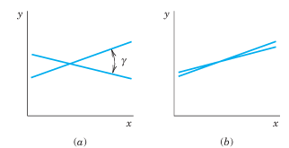
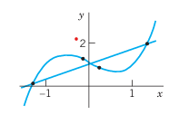
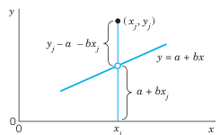
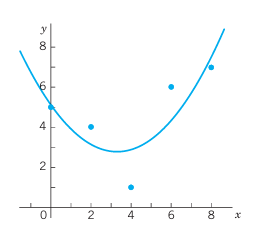
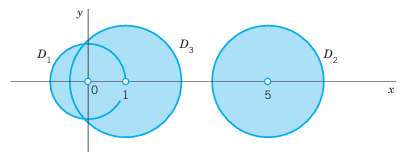
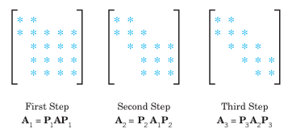

22 Numeric Linear Algebra
23 Numeric Linear Algebra
This chapter deals with two main topics. The first topic is how to solve linear systems of equations numerically. We start with Gauss elimination, which may be familiar to some readers, but this time in an algorithmic setting with partial pivoting. Variants of this method (Doolittle, Crout, Cholesky, Gauss–Jordan) are discussed in Section 23.2. All these methods are direct methods, that is, methods of numerics where we know in advance how many steps they will take until they arrive at a solution. However, small pivots and roundoff error magnification may produce nonsensical results, such as in the Gauss method. A shift occurs in Section 23.3, where we discuss numeric iteration methods or indirect methods to address our first topic. Here we cannot be totally sure how many steps will be needed to arrive at a good answer. Several factors—such as how far is the starting value from our initial solution, how is the problem structure influencing speed of convergence, how accurate would we like our result to be—determine the outcome of these methods. Moreover, our computation cycle may not converge. Gauss–Seidel iteration and Jacobi iteration are discussed in Section 23.3. Section 23.4 is at the heart of addressing the pitfalls of numeric linear algebra. It is concerned with problems that are ill-conditioned. We learn to estimate how “bad” such a problem is by calculating the condition number of its matrix.
The second topic (Section 23.6 to Section 23.9) is how to solve eigenvalue problems numerically. Eigenvalue problems appear throughout engineering, physics, mathematics, economics, and many areas. For large or very large matrices, determining the eigenvalues is difficult as it involves finding the roots of the characteristic equations, which are high-degree polynomials. As such, there are different approaches to tackling this problem. Some methods, such as Gerschgorin’s method and Collatz’s method only provide a range in which eigenvalues lie and thus are known as inclusion methods. Others such as tridiagonalization and QR-factorization actually find all the eigenvalues. The area is quite ingenious and should be fascinating to the reader.
COMMENT. This chapter is independent of Chap. 19 and can be studied immediately after Chap. 7 or 8.
Prerequisite: Secs. 7.1, 7.2, 8.1.
Sections that may be omitted in a shorter course: Section 23.4, Section 23.5, and Section 23.9.
References and Answers to Problems: App. 1 Part E, App. 2.
23.1 Linear Systems: Gauss Elimination
The basic method for solving systems of linear equations by Gauss elimination and back substitution was explained in Sec. 7.3. If you covered Sec. 7.3, you may wonder why we cover Gauss elimination again. The reason is that here we cover Gauss elimination in the setting of numerics and introduce new material such as pivoting, row scaling, and operation count. Furthermore, we give an algorithmic representation of Gauss elimination in Table 23.1 that can be readily converted into software. We also show when Gauss elimination runs into difficulties with small pivots and what to do about it. The reader should pay close attention to the material as variants of Gauss elimination are covered in Section 23.2 and, furthermore, the general problem of solving linear systems is the focus of the first half of this chapter.
A linear system of \(n\) equations in \(n\) unknowns \(x_1, \ldots, x_n\) is a set of equations of the form \[ \begin{aligned} E_1: \quad & a_{11}x_1 + a_{12}x_2 + \cdots + a_{1n}x_n = b_1 \\ E_2: \quad & a_{21}x_1 + a_{22}x_2 + \cdots + a_{2n}x_n = b_2 \\ & \quad \cdots\cdots\cdots\cdots\cdots\cdots\cdots\cdots\cdots\cdots \\ E_n: \quad & a_{n1}x_1 + a_{n2}x_2 + \cdots + a_{nn}x_n = b_n \end{aligned} \tag{23.1}\] where the coefficients \(a_{jk}\) and the \(b_j\) are given numbers. The system is called homogeneous if all the \(b_j\) are zero; otherwise it is called nonhomogeneous. Using matrix multiplication (Sec. 7.2), we can write (Equation 23.1) as a single vector equation \[Ax = b \tag{23.2}\] where the coefficient matrix \(A = [a_{jk}]\) is the \(n \times n\) matrix \[ A = \begin{bmatrix} a_{11} & a_{12} & \cdots & a_{1n} \\ a_{21} & a_{22} & \cdots & a_{2n} \\ \vdots & \vdots & \ddots & \vdots \\ a_{n1} & a_{n2} & \cdots & a_{nn} \end{bmatrix} \] and \(x\) and \(b\) are column vectors: \[ x = \begin{bmatrix} x_1 \\ x_2 \\ \vdots \\ x_n \end{bmatrix}, \qquad b = \begin{bmatrix} b_1 \\ b_2 \\ \vdots \\ b_n \end{bmatrix} \] The following matrix \([A \mid b]\) is called the augmented matrix of the system (Equation 23.1): \[ [A \mid b] = \begin{bmatrix} a_{11} & a_{12} & \cdots & a_{1n} & \mid & b_1 \\ a_{21} & a_{22} & \cdots & a_{2n} & \mid & b_2 \\ \vdots & \vdots & \ddots & \vdots & \mid & \vdots \\ a_{n1} & a_{n2} & \cdots & a_{nn} & \mid & b_n \end{bmatrix} \] A solution of (Equation 23.1) is a set of numbers \(x_1, \ldots, x_n\) that satisfy all the \(n\) equations, and a solution vector of (Equation 23.1) is a vector \(x\) whose components constitute a solution of (Equation 23.1).
The method of solving such a system by determinants (Cramer’s rule in Sec. 7.7) is not practical, even with efficient methods for evaluating the determinants.
A practical method for the solution of a linear system is the so-called Gauss elimination, which we shall now discuss (proceeding independently of Sec. 7.3).
23.1.1 Gauss Elimination
This standard method for solving linear systems (Equation 23.1) is a systematic process of elimination that reduces (Equation 23.1) to triangular form because the system can then be easily solved by back substitution. For instance, a triangular system is \[ \begin{aligned} 6x_1 + 2x_2 + 8x_3 &= 26 \\ 8x_2 + 2x_3 &= -7 \\ -3x_3 &= -1.5 \end{aligned} \] and back substitution gives \(x_3 = 0.5\) from the third equation, then \(x_2 = (-7 - 2 \cdot 0.5)/8 = -1\) from the second equation, and finally \(x_1 = (26 - 2(-1) - 8(0.5))/6 = 4\) from the first equation.
How do we reduce a given system (Equation 23.1) to triangular form? In the first step we eliminate \(x_1\) from equations \(E_2\) to \(E_n\) in (Equation 23.1). We do this by adding (or subtracting) suitable multiples of \(E_1\) to (from) equations \(E_2\) to \(E_n\) and taking the resulting equations, call them \(E_2^*, \ldots, E_n^*\), as the new equations. The first equation, \(E_1\), is called the pivot equation in this step, and \(a_{11}\) is called the pivot. This equation is left unaltered. In the second step we take the new second equation \(E_2^*\) (which no longer contains \(x_1\)) as the pivot equation and use it to eliminate \(x_2\) from \(E_3^*\) to \(E_n^*\). And so on. After \(n-1\) steps this gives a triangular system that can be solved by back substitution as just shown. In this way we obtain precisely all solutions of the given system (as proved in Sec. 7.3).
The pivot (in step \(k\)) must be different from zero and should be large in absolute value to avoid roundoff magnification by the multiplication in the elimination. For this we choose as our pivot equation one that has the absolutely largest \(a_{jk}\) in column \(k\) on or below the main diagonal (actually, the uppermost if there are several such equations). This popular method is called partial pivoting. It is used in CASs (e.g., in Maple).
Partial pivoting distinguishes it from total pivoting, which involves both row and column interchanges but is hardly used in practice.
Let us illustrate this method with a simple example.
23.1.2 Gauss Elimination. Partial Pivoting
Solve the system \[ \begin{aligned} E_1: \quad & & 8x_2 + 2x_3 &= -7 \\ E_2: \quad & 3x_1 + 5x_2 + 2x_3 &= 8 \\ E_3: \quad & 6x_1 + 2x_2 + 8x_3 &= 26 \end{aligned} \]
Solution. We must pivot since \(E_1\) has no \(x_1\)-term (the coefficient is 0). In Column 1, equation \(E_3\) has the largest coefficient (6). Hence we interchange \(E_1\) and \(E_3\).
Step 1. Elimination of \(x_1\). It would suffice to show the augmented matrix and operate on it. We show both the equations and the augmented matrix. In the first step, the first equation is the pivot equation. Thus: \[ \begin{aligned} 6x_1 + 2x_2 + 8x_3 &= 26 \\ 3x_1 + 5x_2 + 2x_3 &= 8 \\ 8x_2 + 2x_3 &= -7 \end{aligned} \qquad \begin{bmatrix} 6 & 2 & 8 & \mid & 26 \\ 3 & 5 & 2 & \mid & 8 \\ 0 & 8 & 2 & \mid & -7 \end{bmatrix} \] To eliminate \(x_1\) from the other equations (here, from the second equation), do: Subtract \(3/6 = 0.5\) times the pivot equation from the second equation. The result is: \[ \begin{aligned} 6x_1 + 2x_2 + 8x_3 &= 26 \\ 4x_2 - 2x_3 &= -5 \\ 8x_2 + 2x_3 &= -7 \end{aligned} \qquad \begin{bmatrix} 6 & 2 & 8 & \mid & 26 \\ 0 & 4 & -2 & \mid & -5 \\ 0 & 8 & 2 & \mid & -7 \end{bmatrix} \]
Step 2. Elimination of \(x_2\). The largest coefficient in Column 2 (on or below the diagonal) is 8. Hence we take the new third equation as the pivot equation, interchanging equations 2 and 3: \[ \begin{aligned} 6x_1 + 2x_2 + 8x_3 &= 26 \\ 8x_2 + 2x_3 &= -7 \\ 4x_2 - 2x_3 &= -5 \end{aligned} \qquad \begin{bmatrix} 6 & 2 & 8 & \mid & 26 \\ 0 & 8 & 2 & \mid & -7 \\ 0 & 4 & -2 & \mid & -5 \end{bmatrix} \] To eliminate \(x_2\) from the third equation, do: Subtract \(4/8 = 0.5\) times the pivot equation from the third equation. The resulting triangular system is shown below. This is the end of the forward elimination. \[ \begin{aligned} 6x_1 + 2x_2 + 8x_3 &= 26 \\ 8x_2 + 2x_3 &= -7 \\ -3x_3 &= -1.5 \end{aligned} \qquad \begin{bmatrix} 6 & 2 & 8 & \mid & 26 \\ 0 & 8 & 2 & \mid & -7 \\ 0 & 0 & -3 & \mid & -1.5 \end{bmatrix} \]
Back substitution. Determination of \(x_3, x_2, x_1\). From this system, taking the last equation, then the second equation, and finally the first equation, we compute the solution: \[ \begin{aligned} x_3 &= -1.5 / (-3) = 0.5 \\ x_2 &= (-7 - 2 \cdot 0.5) / 8 = -1 \\ x_1 &= (26 - 2(-1) - 8(0.5)) / 6 = 4 \end{aligned} \] This is the correct solution. \(\blacksquare\)
The general algorithm for the Gauss elimination is shown in Table 23.1. To help explain the algorithm, we have numbered some of its lines. \(x_i\) is denoted by \(x_i\) for uniformity. In lines 1 and 2 we look for a possible pivot. For \(j = k, \ldots, n\), we find a row \(m\) containing the element in column \(k\) of greatest absolute value. If \(a_{mk} = 0\), we output “No unique solution exists” (lines 3). Otherwise, we swap row \(k\) and row \(m\). In lines 4 and 5 we perform row elimination, updating the coefficient matrix and the right-hand side.
ALGORITHM GAUSS (\(A = [a_{jk}], \ b\))
This algorithm computes a unique solution \(x = [x_j]\) of the system \(Ax = b\) or indicates that the system has no unique solution.
- INPUT: Augmented \(n \times (n+1)\) matrix \(B = [A \mid b] = [a_{jk}]\) where \(j = 1, \dots, n\) and \(k = 1, \dots, n+1\).
- OUTPUT: Solution \(x = [x_j]\) of the system or message that the system has no unique solution.
For \(k = 1, \ldots, n-1\), do:
- Find \(m \ge k\) such that \(|a_{mk}| = \max_{j=k,\dots,n} |a_{jk}|\).
- If \(a_{mk} = 0\) then OUTPUT “No unique solution exists.” Stop. [Procedure completed unsuccessfully]
- Else if \(m > k\), exchange row \(k\) and row \(m\).
- For \(j = k+1, \ldots, n\), do: Compute the multiplier \[m_{jk} = \frac{a_{jk}}{a_{kk}}\] For \(p = k+1, \ldots, n+1\), do: \[a_{jp} \leftarrow a_{jp} - m_{jk}a_{kp}\] End
- End
End
- If \(a_{nn} = 0\) then OUTPUT “No unique solution exists.” Stop.
- Else [Start back substitution] \[x_n = \frac{a_{n, n+1}}{a_{nn}}\] For \(i = n-1, \ldots, 1\), do: \[x_i = \frac{1}{a_{ii}}\left(a_{i, n+1} - \sum_{j=i+1}^n a_{ij}x_j\right)\] End OUTPUT \(x = [x_j]\). Stop.
End GAUSS ***
23.1.3 Gauss Elimination in Table 23.1, Sample Computation
In Example 1 we had \(a_{11} = 0\), so that pivoting was necessary. The greatest coefficient in Column 1 was 6. Thus in line 1, \(m = 3\) and we interchanged row 1 and row 3. Then in lines 4 and 5 we computed \(m_{21} = 3/6 = 0.5\) and \(m_{31} = 0/6 = 0\), and then updated rows 2 and 3. In Step 2 we had 8 as the greatest coefficient in Column 2, hence \(m = 3\). We interchanged rows 2 and 3, computed \(m_{32} = 4/8 = 0.5\) in line 4, and updated row 3. This produced the triangular form used in the back substitution. \(\blacksquare\)
If in Step \(k\), \(a_{kk} = 0\), we must pivot. If \(a_{kk}\) is small, we should pivot because of roundoff error magnification that may seriously affect accuracy or even produce nonsensical results.
23.1.4 Difficulty with Small Pivots
The solution of the system \[ \begin{aligned} 0.0004x_1 + 1.402x_2 &= 1.406 \\ 0.4003x_1 - 1.502x_2 &= 2.501 \end{aligned} \] is \(x_1 = 10, \ x_2 = 1\). We solve this system by the Gauss elimination, using four-digit floating-point arithmetic.
Picking the first of the given equations as the pivot equation, we have to multiply this equation by \[m_{21} = \frac{0.4003}{0.0004} = 1001\] and subtract the result from the second equation. \[ \begin{aligned} x_2 \text{ coefficient:} \quad & -1.502 - 1001 \times 1.402 = -1.502 - 1403 = -1405 \quad (\text{rounded to 4S}) \\ \text{RHS:} \quad & 2.501 - 1001 \times 1.406 = 2.501 - 1407 = -1404 \quad (\text{rounded to 4S}) \end{aligned} \] Hence \(-1405x_2 = -1404\), so \(x_2 = 0.9993\). Substitute this into the first equation: \[0.0004x_1 = 1.406 - 1.402 \times 0.9993 = 1.406 - 1.401 = 0.005 \implies x_1 = 12.5\] This failure occurs because \(a_{11}\) is small compared with \(a_{12}\), so that a small roundoff error in \(x_2\) leads to a large error in \(x_1\).
Picking the second of the given equations as the pivot equation, we have to multiply this equation by \[m_{21} = \frac{0.0004}{0.4003} = 0.0009993\] and subtract the result from the first equation, obtaining \[1.404x_2 = 1.404 \implies x_2 = 1.000\] and from the pivot equation \[0.4003x_1 = 2.501 + 1.502 \times 1.000 = 4.003 \implies x_1 = 10.00\] This success occurs because \(a_{21}\) is not very small compared to \(a_{22}\), so that a small roundoff error in \(x_2\) does not lead to a large error in \(x_1\). \(\blacksquare\)
Error estimates for the Gauss elimination are discussed in Ref. [E5] listed in App. 1.
Row scaling means the multiplication of each Row \(j\) by a suitable scaling factor \(s_j\). It is done in connection with partial pivoting to get more accurate solutions. Despite much research (see Refs. [E9], [E24] in App. 1) and the proposition of several principles, scaling is still not well understood. As a possibility, one can scale for pivot choice only (not in the calculation, to avoid additional roundoff) and take as first pivot the entry for which \(|a_{j1}| / s_j\) is largest; here \(s_j\) is an entry of largest absolute value in Row \(j\). Similarly in the further steps of the Gauss elimination.
For instance, for the system \[ \begin{aligned} 4.0000x_1 + 14020x_2 &= 14060 \\ 0.4003x_1 - 1.502x_2 &= 2.501 \end{aligned} \] we might pick 4 as pivot, but dividing the first equation by \(10^4\) gives the system in Example 3, for which the second equation is a better pivot equation.
23.1.5 Operation Count
Quite generally, important factors in judging the quality of a numeric method are: 1. Amount of storage 2. Amount of time (number of operations) 3. Effect of roundoff error
For the Gauss elimination, the operation count for a full matrix (a matrix with relatively many nonzero entries) is as follows. In Step \(k\) we eliminate from \(n-k\) equations. This needs \(n-k\) divisions in computing the \(m_{jk}\) and \((n-k)(n-k+1)\) multiplications and as many subtractions. Since we do \(n-1\) steps, the total number of operations in this forward elimination is \[f(n) \approx \frac{2}{3}n^3\] where \(\frac{2}{3}n^3\) is obtained by dropping lower powers of \(n\). We see that \(f(n)\) grows about proportional to \(n^3\). We say that \(f(n)\) is of order \(n^3\) and write \[f(n) = O(n^3)\] where \(O\) suggests order. The general definition of \(O\) is as follows. We write \(f(n) = O(h(n))\) if the quotients \(|f(n)/h(n)|\) and \(|h(n)/f(n)|\) remain bounded as \(n \to \infty\). In our present case, \(h(n) = n^3\), and, indeed, \(|f(n)/n^3| \to 2/3\) because the omitted terms divided by \(n^3\) go to zero as \(n \to \infty\).
In the back substitution, we make \(n(n-1)/2\) multiplications and as many subtractions, as well as \(n\) divisions. Hence the number of operations in the back substitution is \[g(n) = O(n^2)\] We see that it grows more slowly than the number of operations in the forward elimination, so that it is negligible for large systems because it is smaller by a factor \(n\), approximately. For instance, if an operation takes \(10^{-9}\) sec, then the times needed are:
| \(n\) | Elimination | Back substitution |
|---|---|---|
| \(100\) | \(0.0007\) sec | \(0.00001\) sec |
| \(1000\) | \(0.7\) sec | \(0.001\) sec |
| \(10000\) | \(11\) min | \(0.1\) sec |
23.1.6 Problem Set
23.1.6.1 Geometric Interpretation
Solve graphically and explain geometrically. 1. \[ \begin{aligned} x_1 - 4x_2 &= 20.1 \\ 3x_1 + 5x_2 &= 5.97 \end{aligned} \] 2. \[ \begin{aligned} 4x_1 - 2x_2 &= 6 \\ 6x_1 + x_2 &= -3 \end{aligned} \] 3. \[ \begin{aligned} 3x_1 + 5x_2 + 2x_3 &= 8 \\ 8x_2 + 2x_3 &= -7 \\ 6x_1 + 2x_2 + 8x_3 &= 26 \end{aligned} \]
23.1.6.2 Gauss Elimination
Solve the following linear systems by Gauss elimination, with partial pivoting if necessary (but without scaling). Show the intermediate steps. Check the result by substitution. If no solution or more than one solution exists, give a reason. 4. \[ \begin{aligned} 3x_1 + x_2 &= 7 \\ 2x_1 - 8x_2 &= -4 \end{aligned} \] 5. \[ \begin{aligned} -10.25x_1 + 17.22x_2 &= 0 \\ -5.00x_1 + 8.40x_2 &= 0 \end{aligned} \] 6. \[ \begin{aligned} -14.4x_1 + 7.0x_2 &= 31.0 \\ 7.2x_1 - 3.5x_2 &= 16.0 \end{aligned} \] 7. \[ \begin{aligned} 25.38x_1 - 15.48x_2 &= 30.60 \\ -14.10x_1 + 8.60x_2 &= -17.00 \end{aligned} \] 8. \[ \begin{aligned} 5x_1 + 3x_2 + x_3 &= 2 \\ -4x_2 + 8x_3 &= -3 \\ 10x_1 - 6x_2 + 26x_3 &= 0 \end{aligned} \] 9. \[ \begin{aligned} 3.4x_1 - 6.12x_2 - 2.72x_3 &= 0 \\ -x_1 + 1.80x_2 + 0.80x_3 &= 0 \\ 2.7x_1 - 4.86x_2 + 2.16x_3 &= 0 \end{aligned} \] 10. \[ \begin{aligned} 4x_1 + 4x_2 + 2x_3 &= 0 \\ 3x_1 - x_2 + 2x_3 &= 0 \\ 3x_1 + 7x_2 + x_3 &= 0 \end{aligned} \] 11. \[ \begin{aligned} 6x_2 + 13x_3 &= 137.86 \\ 6x_1 - 8x_3 &= -85.88 \\ 13x_1 - 8x_2 &= 178.54 \end{aligned} \] 12. \[ \begin{aligned} -3x_1 + 6x_2 - 9x_3 &= -46.725 \\ x_1 - 4x_2 + 3x_3 &= 19.571 \\ 2x_1 + 5x_2 - 7x_3 &= -20.073 \end{aligned} \] 13. \[ \begin{aligned} 3.2x_1 + 1.6x_2 &= -0.8 \\ 1.6x_1 - 0.8x_2 + 2.4x_3 &= 16.0 \\ 2.4x_2 - 4.8x_3 + 3.6x_4 &= -39.0 \\ 3.6x_3 + 2.4x_4 &= 10.2 \end{aligned} \] 14. \[ \begin{aligned} 2.2x_2 + 1.5x_3 - 3.3x_4 &= -9.30 \\ 0.2x_1 + 1.8x_2 + 4.2x_4 &= 9.24 \\ -x_1 - 3.1x_2 + 2.5x_3 &= -8.70 \\ 0.5x_1 - 3.8x_3 + 1.5x_4 &= -11.94 \end{aligned} \] 15. \[ \begin{aligned} -47x_1 + 4x_2 - 7x_3 &= -118 \\ 19x_1 - 3x_2 + 2x_3 &= 43 \\ -15x_1 + 5x_2 &= -25 \end{aligned} \] 16. \[ \begin{aligned} 3x_2 + 5x_3 &= 1.20736 \\ 3x_1 - 4x_2 &= -2.34066 \\ 5x_1 + 6x_3 &= -0.32919 \end{aligned} \]
CAS EXPERIMENT. Gauss Elimination. Write a program for the Gauss elimination with pivoting. Apply it to Probs. 13–16. Experiment with systems whose coefficient determinant is small in absolute value. Also investigate the performance of your program for larger systems of your choice, including sparse systems.
TEAM PROJECT. Linear Systems and Gauss Elimination.
- Existence and uniqueness. Find \(a\) and \(b\) such that the system \[
\begin{aligned}
ax_1 + x_2 &= b \\
x_1 + x_2 &= 3
\end{aligned}
\] has (i) a unique solution, (ii) infinitely many solutions, (iii) no solutions.
- Gauss elimination and nonexistence. Apply the Gauss elimination to the following two systems and compare the calculations step by step. Explain why the elimination fails if no solution exists. \[ \text{System 1:} \quad \begin{aligned} x_1 + x_2 + x_3 &= 3 \\ 4x_1 + 2x_2 - x_3 &= 5 \\ 9x_1 + 5x_2 - x_3 &= 12 \end{aligned} \qquad \text{System 2:} \quad \begin{aligned} x_1 + x_2 + x_3 &= 3 \\ 4x_1 + 2x_2 - x_3 &= 5 \\ 9x_1 + 5x_2 - x_3 &= 13 \end{aligned} \]
- Zero determinant. Why may a computer program give you the result that a homogeneous linear system has only the trivial solution although you know its coefficient determinant to be zero?
- Pivoting. Solve System (A) by the Gauss elimination first without pivoting. Show that for any fixed machine word length and sufficiently small \(\varepsilon > 0\), the computer gives \(x_2 = 1\) and then \(x_1 = 0\). What is the exact solution? Its limit as \(\varepsilon \to 0\)? Then solve the system by the Gauss elimination with pivoting. Compare and comment. \[ \text{System (A):} \quad \begin{aligned} \varepsilon x_1 + x_2 &= 1 \\ x_1 + x_2 &= 2 \end{aligned} \]
- Pivoting. Solve System (B) by the Gauss elimination and three-digit rounding arithmetic, choosing (i) the first equation, (ii) the second equation as pivot equation. (Remember to round to 3S after each operation before doing the next, just as would be done on a computer!) Then use four-digit rounding arithmetic in those two calculations. Compare and comment. \[ \text{System (B):} \quad \begin{aligned} 4.03x_1 + 2.16x_2 &= -4.61 \\ 6.21x_1 + 3.35x_2 &= -7.19 \end{aligned} \]
- Existence and uniqueness. Find \(a\) and \(b\) such that the system \[
\begin{aligned}
ax_1 + x_2 &= b \\
x_1 + x_2 &= 3
\end{aligned}
\] has (i) a unique solution, (ii) infinitely many solutions, (iii) no solutions.
23.2 Linear Systems: LU-Factorization, Matrix Inversion
We continue our discussion of numeric methods for solving linear systems of \(n\) equations in \(n\) unknowns \[Ax = b \tag{23.3}\] where \(A = [a_{jk}]\) is the given coefficient matrix and \(x^T = [x_1, \dots, x_n]\), \(b^T = [b_1, \dots, b_n]\).
We present three related methods that are modifications of the Gauss elimination, which require fewer arithmetic operations. They are named after Doolittle, Crout, and Cholesky and use the idea of the LU-factorization of \(A\), which we explain first.
An LU-factorization of a given square matrix \(A\) is of the form \[A = LU \tag{23.4}\] where \(L\) is lower triangular and \(U\) is upper triangular. For example, \[ \begin{bmatrix} 2 & 3 \\ 8 & 5 \end{bmatrix} = \begin{bmatrix} 1 & 0 \\ 4 & 1 \end{bmatrix} \begin{bmatrix} 2 & 3 \\ 0 & -7 \end{bmatrix} \] It can be proved that for any nonsingular matrix (see Sec. 7.8) the rows can be reordered so that the resulting matrix \(A\) has an LU-factorization (Equation 23.4) in which \(L\) turns out to be the matrix of the multipliers of the Gauss elimination, with main diagonal \(1, \dots, 1\), and \(U\) is the matrix of the triangular system at the end of the Gauss elimination (see Ref. [E5] listed in App. 1).
The crucial idea now is that \(L\) and \(U\) in (Equation 23.4) can be computed directly, without solving simultaneous equations (thus, without using the Gauss elimination). As an operation count shows, this needs about \(n^3/3\) operations, about half as many as the Gauss elimination, which needs about \(2n^3/3\) (see Section 23.1). And once we have (Equation 23.4), we can use it for solving \(Ax = b\) in two steps, involving only about \(n^2\) operations, simply by noting that \(Ax = b\) may be written \(LUx = b\), which is: \[ \begin{aligned} (a) \quad & Ly = b \\ (b) \quad & Ux = y \end{aligned} \tag{23.5}\] and solving first (Equation 23.5}a) for \(y\) and then (Equation 23.5}b) for \(x\). Here we can require that \(L\) have main diagonal \(1, \dots, 1\) as stated before; then this is called Doolittle’s method.1 Both systems (Equation 23.5}a) and (Equation 23.5}b) are triangular, so we can solve them as in the back substitution for the Gauss elimination.
A similar method, Crout’s method,2 is obtained from (Equation 23.4) if \(U\) (instead of \(L\)) is required to have main diagonal \(1, \dots, 1\). In either case the factorization (Equation 23.4) is unique.
1 MYRICK H. DOOLITTLE (1830–1913). American mathematician employed by the U.S. Coast and Geodetic Survey Office. His method appeared in U.S. Coast and Geodetic Survey, 1878, 115–120.
2 PRESCOTT DURAND CROUT (1907–1984), American mathematician, professor at MIT, also worked at General Electric.
23.2.1 Doolittle’s Method
Solve the system in Example 1 of Section 23.1 by Doolittle’s method.
Solution. The decomposition \(A = LU\) is obtained from \[ A = [a_{jk}] = \begin{bmatrix} 3 & 5 & 2 \\ 0 & 8 & 2 \\ 6 & 2 & 8 \end{bmatrix} = \begin{bmatrix} 1 & 0 & 0 \\ m_{21} & 1 & 0 \\ m_{31} & m_{32} & 1 \end{bmatrix} \begin{bmatrix} u_{11} & u_{12} & u_{13} \\ 0 & u_{22} & u_{23} \\ 0 & 0 & u_{33} \end{bmatrix} \] by determining the \(u_{jk}\) and \(m_{jk}\) using matrix multiplication. By going through \(A\) row by row we get successively:
Row 1:
\[u_{11} = 3, \quad u_{12} = 5, \quad u_{13} = 2\]
Row 2:
\[m_{21} u_{11} = a_{21} = 0 \implies m_{21} = 0\]
\[m_{21} u_{12} + u_{22} = a_{22} = 8 \implies u_{22} = 8\]
\[m_{21} u_{13} + u_{23} = a_{23} = 2 \implies u_{23} = 2\]
Row 3:
\[m_{31} u_{11} = a_{31} = 6 \implies m_{31} = 2\]
\[m_{31} u_{12} + m_{32} u_{22} = a_{32} = 2 \implies 2(5) + m_{32}(8) = 2 \implies m_{32} = -1\]
\[m_{31} u_{13} + m_{32} u_{23} + u_{33} = a_{33} = 8 \implies 2(2) + (-1)(2) + u_{33} = 8 \implies u_{33} = 6\]
Thus the factorization is: \[ \begin{bmatrix} 3 & 5 & 2 \\ 0 & 8 & 2 \\ 6 & 2 & 8 \end{bmatrix} = \begin{bmatrix} 1 & 0 & 0 \\ 0 & 1 & 0 \\ 2 & -1 & 1 \end{bmatrix} \begin{bmatrix} 3 & 5 & 2 \\ 0 & 8 & 2 \\ 0 & 0 & 6 \end{bmatrix} \] We first solve \(Ly = b\), determining \(y^T = [y_1, y_2, y_3]\), from \[ \begin{bmatrix} 1 & 0 & 0 \\ 0 & 1 & 0 \\ 2 & -1 & 1 \end{bmatrix} \begin{bmatrix} y_1 \\ y_2 \\ y_3 \end{bmatrix} = \begin{bmatrix} 8 \\ -7 \\ 26 \end{bmatrix} \] which gives: \[ \begin{aligned} y_1 &= 8 \\ y_2 &= -7 \\ 2y_1 - y_2 + y_3 &= 26 \implies 16 - (-7) + y_3 = 26 \implies y_3 = 3 \end{aligned} \] Then we solve \(Ux = y\) for \(x^T = [x_1, x_2, x_3]\): \[ \begin{bmatrix} 3 & 5 & 2 \\ 0 & 8 & 2 \\ 0 & 0 & 6 \end{bmatrix} \begin{bmatrix} x_1 \\ x_2 \\ x_3 \end{bmatrix} = \begin{bmatrix} 8 \\ -7 \\ 3 \end{bmatrix} \] which yields: \[ \begin{aligned} 6x_3 &= 3 \implies x_3 = 0.5 \\ 8x_2 + 2x_3 &= -7 \implies 8x_2 + 1 = -7 \implies x_2 = -1 \\ 3x_1 + 5x_2 + 2x_3 &= 8 \implies 3x_1 - 5 + 1 = 8 \implies x_1 = 4 \end{aligned} \] This agrees with the solution in Example 1 of Section 23.1. \(\blacksquare\)
Our formulas in Example 1 suggest that for general \(n\) the entries of the matrices \(U = [u_{jk}]\) and \(L = [m_{jk}]\) (with main diagonal \(1, \dots, 1\)) in the Doolittle method are computed from: \[ \begin{aligned} u_{1k} &= a_{1k} \qquad (k = 1, \ldots, n) \\ m_{j1} &= \frac{a_{j1}}{u_{11}} \qquad (j = 2, \ldots, n) \end{aligned} \] and then for \(k = 2, \ldots, n\): \[ \begin{aligned} u_{jk} &= a_{jk} - \sum_{s=1}^{j-1} m_{js} u_{sk} \qquad (j = k, \ldots, n; \text{ row } j \text{ of } U) \\ m_{jk} &= \frac{1}{u_{kk}}\left(a_{jk} - \sum_{s=1}^{k-1} m_{js} u_{sk}\right) \qquad (j = k+1, \ldots, n; \text{ col } k \text{ of } L) \end{aligned} \tag{23.6}\]
Row Interchanges. Matrices, such as \[ \begin{bmatrix} 0 & 1 \\ 1 & 0 \end{bmatrix} \qquad \text{or} \qquad \begin{bmatrix} 0 & 1 & 0 \\ 0 & 0 & 1 \\ 1 & 0 & 0 \end{bmatrix} \] have no LU-factorization. This indicates that for obtaining an LU-factorization, row interchanges of \(A\) (and corresponding interchanges in \(b\)) may be necessary.
23.2.2 Cholesky’s Method
For a symmetric, positive definite matrix \(A\) (thus \(A = A^T\), \(x^T Ax > 0\) for all \(x \neq 0\)), we can in (Equation 23.4) even choose \(U = L^T\), thus \[A = L L^T \tag{23.7}\] where \(L\) is lower triangular (but we cannot impose conditions on the main diagonal entries of \(L\)). For example, \[ \begin{bmatrix} 4 & 2 & 14 \\ 2 & 17 & -5 \\ 14 & -5 & 83 \end{bmatrix} = \begin{bmatrix} 2 & 0 & 0 \\ 1 & 4 & 0 \\ 7 & -3 & 5 \end{bmatrix} \begin{bmatrix} 2 & 1 & 7 \\ 0 & 4 & -3 \\ 0 & 0 & 5 \end{bmatrix} \] The popular method of solving \(Ax = b\) based on this factorization is called Cholesky’s method.3
In terms of the entries of \(L = [l_{jk}]\), the formulas for the factorization are: \[ \begin{aligned} l_{11} &= \sqrt{a_{11}} \\ l_{j1} &= \frac{a_{j1}}{l_{11}} \qquad (j = 2, \ldots, n) \end{aligned} \] and then for \(j = 2, \ldots, n\): \[ \begin{aligned} l_{jj} &= \sqrt{a_{jj} - \sum_{s=1}^{j-1} l_{js}^2} \\ l_{pj} &= \frac{1}{l_{jj}}\left(a_{pj} - \sum_{s=1}^{j-1} l_{js} l_{ps}\right) \qquad (p = j+1, \ldots, n) \end{aligned} \tag{23.8}\] If \(A\) is symmetric but not positive definite, this method could still be applied, but then leads to a complex matrix \(L\), so that the method becomes impractical.
3 ANDRÉ-LOUIS CHOLESKY (1875–1918), French military officer, geodesist, and mathematician. Surveyed Crete and North Africa. Died in World War I. His method was published posthumously in Bulletin Géodésique in 1924 but received little attention until JOHN TODD (1911–2007)—Irish-American mathematician, numerical analyst, and early pioneer of computer methods in numerics, professor at Caltech, and close personal friend and collaborator of ERWIN KREYSZIG—taught Cholesky’s method in his analysis course at King’s College, London, in the 1940s.
23.2.3 Cholesky’s Method
Solve by Cholesky’s method: \[ \begin{aligned} 4x_1 + 2x_2 + 14x_3 &= 14 \\ 2x_1 + 17x_2 - 5x_3 &= -101 \\ 14x_1 - 5x_2 + 83x_3 &= 155 \end{aligned} \]
Solution. From (Equation 23.8) or from the form of the factorization \[ \begin{bmatrix} 4 & 2 & 14 \\ 2 & 17 & -5 \\ 14 & -5 & 83 \end{bmatrix} = \begin{bmatrix} l_{11} & 0 & 0 \\ l_{21} & l_{22} & 0 \\ l_{31} & l_{32} & l_{33} \end{bmatrix} \begin{bmatrix} l_{11} & l_{21} & l_{31} \\ 0 & l_{22} & l_{32} \\ 0 & 0 & l_{33} \end{bmatrix} \] we compute, in the given order, \[ \begin{aligned} l_{11} &= \sqrt{a_{11}} = \sqrt{4} = 2 \\ l_{21} &= \frac{a_{21}}{l_{11}} = \frac{2}{2} = 1 \\ l_{31} &= \frac{a_{31}}{l_{11}} = \frac{14}{2} = 7 \\ l_{22} &= \sqrt{a_{22} - l_{21}^2} = \sqrt{17 - 1^2} = 4 \\ l_{32} &= \frac{1}{l_{22}}(a_{32} - l_{31} l_{21}) = \frac{1}{4}(-5 - 7 \cdot 1) = -3 \\ l_{33} &= \sqrt{a_{33} - l_{31}^2 - l_{32}^2} = \sqrt{83 - 7^2 - (-3)^2} = \sqrt{83 - 49 - 9} = \sqrt{25} = 5 \end{aligned} \] This agrees with the example matrix shown above. We now have to solve \(Ly = b\), that is, \[ \begin{bmatrix} 2 & 0 & 0 \\ 1 & 4 & 0 \\ 7 & -3 & 5 \end{bmatrix} \begin{bmatrix} y_1 \\ y_2 \\ y_3 \end{bmatrix} = \begin{bmatrix} 14 \\ -101 \\ 155 \end{bmatrix} \] By forward substitution we obtain \(y_1 = 7\), then \(y_2 = (-101 - 7)/4 = -27\), and finally \(y_3 = (155 - 7(7) - (-3)(-27))/5 = (155 - 49 - 81)/5 = 25/5 = 5\).
As the second step, we have to solve \(L^T x = y\), that is, \[ \begin{bmatrix} 2 & 1 & 7 \\ 0 & 4 & -3 \\ 0 & 0 & 5 \end{bmatrix} \begin{bmatrix} x_1 \\ x_2 \\ x_3 \end{bmatrix} = \begin{bmatrix} 7 \\ -27 \\ 5 \end{bmatrix} \] By back substitution we find \(x_3 = 5/5 = 1\), then \(x_2 = (-27 - (-3)(1))/4 = -6\), and finally \(x_1 = (7 - 1(-6) - 7(1))/2 = 3\). The solution is \(x^T = [3, -6, 1]\). \(\blacksquare\)
Theorem 23.1 (Stability of the Cholesky Factorization) The Cholesky \(LL^T\)-factorization is numerically stable.
PROOF We have by squaring the formulas in (Equation 23.8) and solving for \(a_{jj}\): \[a_{jj} = l_{j1}^2 + l_{j2}^2 + \cdots + l_{jj}^2\] Hence for all \(k \le j\) (note that \(l_{jk} = 0\) for \(k > j\)): \[l_{jk}^2 \le a_{jj}\] That is, the entries of \(L\) are bounded by the square root of the corresponding diagonal entry of \(A\), which means stability against rounding. \(\blacksquare\)
23.2.4 Gauss–Jordan Elimination. Matrix Inversion
Another variant of the Gauss elimination is the Gauss–Jordan elimination, introduced by W. Jordan in 1920, in which back substitution is avoided by additional computations that reduce the matrix to diagonal form, instead of the triangular form in the Gauss elimination. But this reduction from the Gauss triangular to the diagonal form requires more operations than back substitution does, so that the method is disadvantageous for solving systems \(Ax = b\). But it may be used for matrix inversion, where the situation is as follows.
The inverse of a nonsingular square matrix \(A\) may be determined in principle by solving the \(n\) systems \[Ax = b_j \qquad (j = 1, \ldots, n) \tag{23.9}\] where \(b_j\) is the \(j\)-th column of the unit matrix \(I\).
However, it is preferable to produce \(A^{-1}\) by operating on the unit matrix \(I\) in the same way as the Gauss–Jordan algorithm, reducing \(A\) to \(I\). A typical illustrative example of this method is given in Sec. 7.8.
23.2.5 Problem Set
23.2.5.1 Doolittle’s Method
Show the factorization and solve by Doolittle’s method. 1. \[ \begin{aligned} 4x_1 + 5x_2 &= 14 \\ 12x_1 + 14x_2 &= 36 \end{aligned} \] 2. \[ \begin{aligned} 2x_1 + 9x_2 &= 8 \\ 3x_1 - 5x_2 &= -62 \end{aligned} \] 3. \[ \begin{aligned} 5x_1 + 4x_2 + x_3 &= 6.8 \\ 10x_1 + 9x_2 + 4x_3 &= 17.6 \\ 10x_1 + 13x_2 + 15x_3 &= 38.4 \end{aligned} \] 4. \[ \begin{aligned} 2x_1 + x_2 + 2x_3 &= 0 \\ -2x_1 + 2x_2 + x_3 &= 0 \\ x_1 + 2x_2 - 2x_3 &= 18 \end{aligned} \] 5. \[ \begin{aligned} 3x_1 + 9x_2 + 6x_3 &= 4.6 \\ 18x_1 + 48x_2 + 39x_3 &= 27.2 \\ 9x_1 - 27x_2 + 42x_3 &= 9.0 \end{aligned} \]
- TEAM PROJECT. Crout’s method factorizes \(A = LU\), where \(L\) is lower triangular and \(U\) is upper triangular with diagonal entries \(u_{jj} = 1\), \(j = 1, \dots, n\).
- Formulas. Obtain formulas for Crout’s method similar to (Equation 23.6).
- Examples. Solve Prob. 5 by Crout’s method.
- Factor the following matrix by the Doolittle, Crout, and Cholesky methods. \[ \begin{bmatrix} 1 & -4 & 2 \\ -4 & 25 & 4 \\ 2 & 4 & 24 \end{bmatrix} \]
- Give the formulas for factoring a tridiagonal matrix by Crout’s method.
- When can you obtain Crout’s factorization from Doolittle’s by transposition?
- Formulas. Obtain formulas for Crout’s method similar to (Equation 23.6).
23.2.5.2 Cholesky’s Method
Show the factorization and solve. 7. \[ \begin{aligned} 9x_1 + 6x_2 + 12x_3 &= 17.4 \\ 6x_1 + 13x_2 + 11x_3 &= 23.6 \\ 12x_1 + 11x_2 + 26x_3 &= 30.8 \end{aligned} \] 8. \[ \begin{aligned} 4x_1 + 6x_2 + 8x_3 &= 0 \\ 6x_1 + 34x_2 + 52x_3 &= -160 \\ 8x_1 + 52x_2 + 129x_3 &= -452 \end{aligned} \] 9. \[ \begin{aligned} 0.01x_1 + 0.03x_3 &= 0.14 \\ 0.16x_2 + 0.08x_3 &= 0.16 \\ 0.03x_1 + 0.08x_2 + 0.14x_3 &= 0.54 \end{aligned} \] 10. \[ \begin{aligned} 4x_1 + 2x_3 &= 1.5 \\ 4x_2 + x_3 &= 4.0 \\ 2x_1 + x_2 + 2x_3 &= 2.5 \end{aligned} \] 11. \[ \begin{aligned} 2x_1 - x_2 + 3x_3 + 2x_4 &= 15 \\ -x_1 + 5x_2 - 5x_3 - 2x_4 &= -35 \\ 3x_1 - 5x_2 + 19x_3 + 3x_4 &= 94 \\ 2x_1 - 2x_2 + 3x_3 + 21x_4 &= 14 \end{aligned> \] 12. \[ \begin{aligned} 4x_1 + 2x_2 + 4x_3 &= 20 \\ 2x_1 + 2x_2 + 3x_3 + 2x_4 &= 36 \\ 4x_1 + 3x_2 + 6x_3 + 3x_4 &= 60 \\ 2x_2 + 3x_3 + 9x_4 &= 122 \end{aligned} \]
Definiteness. Let \(A, B\) be \(n \times n\) and positive definite. Are \(-A\), \(A^T\), \(A+B\), \(A-B\) positive definite?
CAS PROJECT. Cholesky’s Method.
- Write a program for solving linear systems by Cholesky’s method and apply it to Example 2 in the text, to Probs. 7–9, and to systems of your choice.
- Splines. Apply the factorization part of the program to the following matrices (as they occur in connection with splines, see (9), Sec. 19.4 with \(c_j = 1\)). \[ \begin{bmatrix} 2 & 1 & 0 \\ 1 & 4 & 1 \\ 0 & 1 & 2 \end{bmatrix} \qquad \text{and} \qquad \begin{bmatrix} 2 & 1 & 0 & 0 \\ 1 & 4 & 1 & 0 \\ 0 & 1 & 4 & 1 \\ 0 & 0 & 1 & 2 \end{bmatrix} \]
- Write a program for solving linear systems by Cholesky’s method and apply it to Example 2 in the text, to Probs. 7–9, and to systems of your choice.
23.2.5.3 Inverse
Find the inverse by the Gauss–Jordan method, showing the details. 15. In Prob. 1 16. In Prob. 4 17. In Team Project 6(c) 18. In Prob. 9 19. In Prob. 12
- Rounding. For the following matrix \(A\) find \(\det A\). What happens if you roundoff the given entries to (a) 5S, (b) 4S, (c) 3S, (d) 2S, (e) 1S? What is the practical implication of your work? \[ A = \begin{bmatrix} 1/3 & 1/4 & 1/6 \\ 1/4 & 1/9 & 1/7 \\ 1/6 & 1/7 & 1/8 \end{bmatrix} \]
23.3 Linear Systems: Solution by Iteration
The Gauss elimination and its variants in the last two sections belong to the direct methods for solving linear systems of equations; these are methods that give solutions after an amount of computation that can be specified in advance. In contrast, in an indirect or iterative method we start from an approximation to the true solution and, if successful, obtain better and better approximations from a computational cycle repeated as often as may be necessary for achieving a required accuracy, so that the amount of arithmetic depends upon the accuracy required and varies from case to case.
We apply iterative methods if the convergence is rapid (if matrices have large main diagonal entries, as we shall see), so that we save operations compared to a direct method. We also use iterative methods if a large system is sparse, that is, has very many zero coefficients, so that one would waste space in storing zeros, for instance, 9995 zeros per equation in a potential problem of \(10000\) equations in \(10000\) unknowns with typically only 5 nonzero terms per equation (more on this in Sec. 21.4).
23.3.1 Gauss–Seidel Iteration Method4
This is an iterative method of great practical importance, which we can simply explain in terms of an example.
4 PHILIPP LUDWIG VON SEIDEL (1821–1896), German mathematician. For Gauss see footnote 5 in Sec. 5.4.
23.3.2 Gauss–Seidel Iteration
We consider the linear system \[ \begin{aligned} x_1 - 0.25x_2 - 0.25x_3 &= 50 \\ -0.25x_1 + x_2 - 0.25x_4 &= 50 \\ -0.25x_1 + x_3 - 0.25x_4 &= 25 \\ -0.25x_2 - 0.25x_3 + x_4 &= 25 \end{aligned} \tag{23.10}\] (Equations of this form arise in the numeric solution of PDEs and in spline interpolation.) We write the system in the form \[ \begin{aligned} x_1 &= \phantom{0.25x_1 + } 0.25x_2 + 0.25x_3 \phantom{ + 0.25x_4} + 50 \\ x_2 &= 0.25x_1 \phantom{ + 0.25x_2 + 0.25x_3} + 0.25x_4 + 50 \\ x_3 &= 0.25x_1 \phantom{ + 0.25x_2 + 0.25x_3} + 0.25x_4 + 25 \\ x_4 &= \phantom{0.25x_1 + } 0.25x_2 + 0.25x_3 \phantom{ + 0.25x_4} + 25 \end{aligned} \tag{23.11}\] These equations are now used for iteration; that is, we start from a (possibly poor) approximation to the solution, say \[x_1^{(0)} = 100, \quad x_2^{(0)} = 100, \quad x_3^{(0)} = 100, \quad x_4^{(0)} = 100\] and compute from (Equation 23.11) a perhaps better approximation \[ \begin{aligned} x_1^{(1)} &= 0.25x_2^{(0)} + 0.25x_3^{(0)} + 50.00 = 25 + 25 + 50 = 100.00 \\ x_2^{(1)} &= 0.25x_1^{(1)} + 0.25x_4^{(0)} + 50.00 = 25 + 25 + 50 = 100.00 \\ x_3^{(1)} &= 0.25x_1^{(1)} + 0.25x_4^{(0)} + 25.00 = 25 + 25 + 25 = 75.00 \\ x_4^{(1)} &= 0.25x_2^{(1)} + 0.25x_3^{(1)} + 25.00 = 25 + 18.75 + 25 = 68.75 \end{aligned} \tag{23.12}\] These equations (Equation 23.12) are obtained from (Equation 23.11) by substituting on the right the most recent approximation for each unknown. In fact, corresponding values replace previous ones as soon as they have been computed, so that in the second and third equations we use \(x_1^{(1)}\) (not \(x_1^{(0)}\)), and in the last equation of (Equation 23.12) we use \(x_2^{(1)}\) and \(x_3^{(1)}\) (not \(x_2^{(0)}\) and \(x_3^{(0)}\)). Using the same principle, we obtain in the next step: \[ \begin{aligned} x_1^{(2)} &= 0.25x_2^{(1)} + 0.25x_3^{(1)} + 50.00 = 0.25(100.00) + 0.25(75.00) + 50.00 = 93.750 \\ x_2^{(2)} &= 0.25x_1^{(2)} + 0.25x_4^{(1)} + 50.00 = 0.25(93.750) + 0.25(68.750) + 50.00 = 90.625 \\ x_3^{(2)} &= 0.25x_1^{(2)} + 0.25x_4^{(1)} + 25.00 = 0.25(93.750) + 0.25(68.750) + 25.00 = 65.625 \\ x_4^{(2)} &= 0.25x_2^{(2)} + 0.25x_3^{(2)} + 25.00 = 0.25(90.625) + 0.25(65.625) + 25.00 = 64.062 \end{aligned} \] Further steps give the values:
| \(m\) | \(x_1^{(m)}\) | \(x_2^{(m)}\) | \(x_3^{(m)}\) | \(x_4^{(m)}\) |
|---|---|---|---|---|
| \(0\) | \(100.000\) | \(100.000\) | \(100.000\) | \(100.000\) |
| \(1\) | \(100.000\) | \(100.000\) | \(75.000\) | \(68.750\) |
| \(2\) | \(93.750\) | \(90.625\) | \(65.625\) | \(64.062\) |
| \(3\) | \(89.062\) | \(88.281\) | \(63.281\) | \(62.891\) |
| \(4\) | \(87.891\) | \(87.695\) | \(62.695\) | \(62.598\) |
| \(5\) | \(87.598\) | \(87.549\) | \(62.549\) | \(62.524\) |
| \(6\) | \(87.524\) | \(87.512\) | \(62.512\) | \(62.506\) |
| \(7\) | \(87.506\) | \(87.503\) | \(62.503\) | \(62.502\) |
Hence convergence to the exact solution \(x_1 = 87.5, \ x_2 = 87.5, \ x_3 = 62.5, \ x_4 = 62.5\) seems rather fast. \(\blacksquare\)
An algorithm for the Gauss–Seidel iteration is shown in Table 23.2. To obtain the algorithm, let us derive the general formulas for this iteration.
We assume that \(a_{jj} = 1\) for \(j = 1, \ldots, n\). (Note that this can be achieved if we can rearrange the equations so that no diagonal coefficient is zero; then we may divide each equation by the corresponding diagonal coefficient.) We now write \[A = I + L + U \tag{23.13}\] where \(I\) is the unit matrix and \(L\) and \(U\) are, respectively, lower and upper triangular matrices with zero main diagonals. If we substitute (Equation 23.13) into \(Ax = b\), we have \[(I + L + U)x = b\] Taking \(Lx\) and \(Ux\) to the right, we obtain, since \(Ix = x\): \[x = b - Lx - Ux \tag{23.14}\] Remembering from (Equation 23.12) in Example 1 that below the main diagonal we took “new” approximations and above the main diagonal “old” ones, we obtain from (Equation 23.14) the desired iteration formulas: \[x^{(m+1)} = b - Lx^{(m+1)} - Ux^{(m)} \tag{23.15}\] where \(x^{(m+1)}\) is the \((m+1)\)-th approximation and \(x^{(m)}\) is the \(m\)-th approximation. In components this gives the formula in line 1 in Table 23.2. The matrix \(A\) must satisfy \(a_{jj} \neq 0\) for all \(j\). In Table 23.2 our assumption \(a_{jj} = 1\) is no longer required, but is automatically taken care of by the factor \(1/a_{jj}\) in line 1.
ALGORITHM GAUSS–SEIDEL (\(A, \ b, \ x^{(0)}, \ \varepsilon, \ N\))
This algorithm computes a solution \(x\) of the system \(Ax = b\) given an initial approximation \(x^{(0)}\), where \(A = [a_{jk}]\) is an \(n \times n\) matrix with \(a_{jj} \neq 0, \ j = 1, \dots, n\).
- INPUT: \(A, \ b\), initial approximation \(x^{(0)}\), tolerance \(\varepsilon > 0\), maximum number of iterations \(N\).
- OUTPUT: Approximate solution \(x^{(m+1)}\) or failure message that \(x^{(N)}\) does not satisfy the tolerance condition.
For \(m = 0, \ldots, N-1\), do:
For \(j = 1, \ldots, n\), do:
\[x_j^{(m+1)} = \frac{1}{a_{jj}}\left(b_j - \sum_{k=1}^{j-1} a_{jk}x_k^{(m+1)} - \sum_{k=j+1}^n a_{jk}x_k^{(m)}\right)\] End
If \(\max_j |x_j^{(m+1)} - x_j^{(m)}| < \varepsilon \max_j |x_j^{(m+1)}|\) then OUTPUT \(x^{(m+1)}\). Stop. [Procedure completed successfully]
End
OUTPUT: “No solution satisfying the tolerance condition obtained after \(N\) iteration steps.” Stop. [Procedure completed unsuccessfully]
End GAUSS–SEIDEL ***
23.3.3 Convergence and Matrix Norms
An iteration method for solving \(Ax = b\) is said to converge for an initial \(x^{(0)}\) if the corresponding iterative sequence \(x^{(0)}, x^{(1)}, x^{(2)}, \ldots\) converges to a solution of the given system. Convergence depends on the relation between \(L, \ U\) and \(b\). To get this relation for the Gauss–Seidel method, we use (Equation 23.15). We first have: \[(I + L)x^{(m+1)} = b - Ux^{(m)}\] and by multiplying by \((I + L)^{-1}\) from the left, \[x^{(m+1)} = Cx^{(m)} + (I + L)^{-1}b \tag{23.16}\] where \[C = -(I + L)^{-1}U\] The Gauss–Seidel iteration converges for every \(x^{(0)}\) if and only if all the eigenvalues (Sec. 8.1) of the “iteration matrix” \(C\) have absolute value less than 1 (Proof in Ref. [E5], p. 191, listed in App. 1).
CAUTION! If you want to get \(C\), first divide the rows of \(A\) by \(a_{jj}\) to have main diagonal \(1, \dots, 1\).
If the spectral radius of \(C\) (maximum of those absolute values) is small, then the convergence is rapid.
Sufficient Convergence Condition. A sufficient condition for convergence is \[\|C\| < 1 \tag{23.17}\] Here \(\|C\|\) is some matrix norm, such as: \[\|C\|_F = \sqrt{\sum_{j=1}^n \sum_{k=1}^n c_{jk}^2} \qquad \text{(Frobenius norm)} \tag{23.18}\] or the greatest of the sums of the absolute values of the entries in a column of \(C\): \[\|C\|_1 = \max_k \sum_{j=1}^n |c_{jk}| \qquad \text{(Column "sum" norm)} \tag{23.19}\] or the greatest of the sums of the absolute values of the entries in a row of \(C\): \[\|C\|_\infty = \max_j \sum_{k=1}^n |c_{jk}| \qquad \text{(Row "sum" norm)} \tag{23.20}\] These are the most frequently used matrix norms in numerics.
In most cases the choice of one of these norms is a matter of computational convenience. However, the following example shows that sometimes one of these norms is preferable to the others.
23.3.4 Test of Convergence of the Gauss–Seidel Iteration
Test whether the Gauss–Seidel iteration converges for the system \[ \begin{aligned} 2x + y + z &= 4 \\ x + 2y + z &= 4 \\ x + y + 2z &= 4 \end{aligned} \] written \[ \begin{aligned} x &= \phantom{0.5x} - 0.5y - 0.5z + 2 \\ y &= -0.5x \phantom{ - 0.5y} - 0.5z + 2 \\ z &= -0.5x - 0.5y \phantom{ - 0.5z} + 2 \end{aligned} \]
Solution. The decomposition \(A = I + L + U\) (multiply the matrix by \(-1\)—why?) is \[ I + L + U = I + \begin{bmatrix} 0 & 0 & 0 \\ 0.5 & 0 & 0 \\ 0.5 & 0.5 & 0 \end{bmatrix} + \begin{bmatrix} 0 & 0.5 & 0.5 \\ 0 & 0 & 0.5 \\ 0 & 0 & 0 \end{bmatrix} \] It shows that: \[ C = -(I + L)^{-1}U = - \begin{bmatrix} 1 & 0 & 0 \\ 0.5 & 1 & 0 \\ 0.5 & 0.5 & 1 \end{bmatrix}^{-1} \begin{bmatrix} 0 & 0.5 & 0.5 \\ 0 & 0 & 0.5 \\ 0 & 0 & 0 \end{bmatrix} = \begin{bmatrix} 0 & -0.5 & -0.5 \\ 0 & 0.25 & -0.25 \\ 0 & 0.125 & 0.375 \end{bmatrix} \] We compute the Frobenius norm of \(C\): \[\|C\|_F = \sqrt{0.5^2 + 0.5^2 + 0.25^2 + 0.25^2 + 0.125^2 + 0.375^2} = \sqrt{0.78125} \approx 0.884 < 1\] and conclude from (Equation 23.17) that this Gauss–Seidel iteration converges. It is interesting that the other two norms would permit no conclusion, as you should verify. Of course, this points to the fact that (Equation 23.17) is sufficient for convergence rather than necessary. \(\blacksquare\)
Residual. Given a system \(Ax = b\), the residual \(r\) of \(x\) with respect to this system is defined by \[r = b - Ax \tag{23.21}\] Clearly, \(r = 0\) if and only if \(x\) is a solution. Hence \(r\) is small for a good approximate solution. In the Gauss–Seidel iteration, at each stage we modify or relax a component of an approximate solution in order to reduce a component of \(r\) to zero. Hence the Gauss–Seidel iteration belongs to a class of methods often called relaxation methods. More about the residual follows in the next section.
23.3.5 Jacobi Iteration
The Gauss–Seidel iteration is a method of successive corrections because for each component we successively replace an approximation of a component by a corresponding new approximation as soon as the latter has been computed. An iteration method is called a method of simultaneous corrections if no component of an approximation is used until all the components of \(x^{(m)}\) have been computed. A method of this type is the Jacobi iteration, which is similar to the Gauss–Seidel iteration but involves not using improved values until a step has been completed and then replacing \(x^{(m)}\) by \(x^{(m+1)}\) at once, directly before the beginning of the next step. Hence if we write (with \(a_{jj} = 1\) as before!) \(Ax = b\) in the form \(x = b + (I - A)x\), the Jacobi iteration in matrix notation is \[x^{(m+1)} = b + (I - A)x^{(m)} \tag{23.22}\]
23.3.6 Problem Set
23.3.6.1 Gauss–Seidel Iteration
Do 3 steps of the Gauss–Seidel iteration, starting from \(x^{(0)} = [0, \ 0, \ 0]^T\). Show the details of the computation. Hint. Make sure that you solve each equation for the variable that has the largest coefficient (why?). Show the details. 1. \[ \begin{aligned} x_1 - 4x_2 &= 20.1 \\ 3x_1 + 5x_2 &= 5.97 \end{aligned} \] 2. \[ \begin{aligned} 4x_1 - 2x_2 &= 6 \\ 6x_1 + x_2 &= -3 \end{aligned} \] 3. \[ \begin{aligned} 3x_1 + 2x_2 + x_3 &= 7 \\ x_1 + 3x_2 + 2x_3 &= 4 \\ 2x_1 + x_2 + 3x_3 &= 7 \end{aligned} \] 4. \[ \begin{aligned} 5x_1 + x_2 + 2x_3 &= 19 \\ x_1 + 4x_2 - 2x_3 &= -2 \\ 2x_1 + 3x_2 + 8x_3 &= 39 \end{aligned} \] 5. \[ \begin{aligned} 4x_1 \phantom{ - 4x_2} + 5x_3 &= 12.5 \\ x_1 + 6x_2 + 2x_3 &= 18.5 \\ 8x_1 + 2x_2 + x_3 &= -11.5 \end{aligned} \] 6. \[ \begin{aligned} 5x_1 - 2x_2 \phantom{ - 2x_3} &= 18 \\ -2x_1 + 10x_2 - 2x_3 &= -60 \\ \phantom{-2x_1} - 2x_2 + 15x_3 &= 128 \end{aligned} \] 7. \[ \begin{aligned} 8x_2 + 7x_3 &= 25.5 \\ 5x_1 + x_2 \phantom{ + 7x_3} &= 0 \\ x_1 + 6x_2 + x_3 &= -10.5 \end{aligned} \] 8. \[ \begin{aligned} 10x_1 + x_2 + x_3 &= 6 \\ x_1 + 10x_2 + x_3 &= 6 \\ x_1 + x_2 + 10x_3 &= 6 \end{aligned} \] 9. \[ \begin{aligned} 4x_1 - x_2 \phantom{ - 2x_3} &= 21 \\ -x_1 + 4x_2 - x_3 &= -45 \\ \phantom{-x_1} - x_2 + 4x_3 &= 33 \end{aligned} \] 10. \[ \begin{aligned} x_1 + 9x_2 + x_3 &= 11 \\ x_1 + x_2 + 9x_3 &= 11 \\ 9x_1 + x_2 + x_3 &= 11 \end{aligned} \]
Apply the Gauss–Seidel iteration (3 steps) to the system in Prob. 5, starting from (a) \(x^{(0)} = [1, \ 1, \ 1]^T\), (b) \(x^{(0)} = [10, \ 10, \ 10]^T\). Compare and comment.
In Prob. 5, compute \(C\) (a) if you solve the first equation for \(x_1\), the second for \(x_2\), the third for \(x_3\), proving convergence; (b) if you nonsensically solve the third equation for \(x_1\), the first for \(x_2\), the second for \(x_3\), proving divergence.
CAS Experiment. Gauss–Seidel Iteration.
- Write a program for Gauss–Seidel iteration.
- Apply the program to \(A(t)x = b\), starting from \(x^{(0)} = [0, \ 0, \ 0]^T\), where \[
A(t) = \begin{bmatrix}
1 & t & t \\
t & 1 & t \\
t & t & 1
\end{bmatrix}, \qquad
b = \begin{bmatrix} 2 \\ 2 \\ 2 \end{bmatrix}
\] For \(t = 0.2, \ 0.5, \ 0.8, \ 0.9\), determine the number of steps to obtain the exact solution to 6S and the corresponding spectral radius of \(C\). Graph the number of steps and the spectral radius as functions of \(t\) and comment.
- Successive overrelaxation (SOR). Show that by adding and subtracting \(x^{(m)}\) on the right, formula (Equation 23.15) can be written: \[x^{(m+1)} = x^{(m)} + (b - Lx^{(m+1)} - (U + I)x^{(m)})\] Anticipation of further corrections motivates the introduction of an overrelaxation factor \(\omega > 1\) to get the SOR formula for Gauss–Seidel: \[x^{(m+1)} = x^{(m)} + \omega(b - Lx^{(m+1)} - (U + I)x^{(m)}) \tag{23.23}\] intended to give more rapid convergence. A recommended value is \(\omega = 2 / (1 + \sqrt{1 - \rho(C)^2})\), where \(\rho(C)\) is the spectral radius of \(C\). Apply SOR to the matrix in (b) for \(t = 0.5\) and \(\omega = 1, \ 1.2\), and \(0.8\) and notice the improvement of convergence. (Spectacular gains are made with larger systems.)
- Write a program for Gauss–Seidel iteration.
23.3.6.2 Jacobi Iteration
Do 5 steps, starting from \(x^{(0)} = [1, \ 1, \ 1]^T\). Compare with the Gauss–Seidel iteration. Which of the two seems to converge faster? Show the details of your work. 14. The system in Prob. 4 15. The system in Prob. 9 16. The system in Prob. 8 17. Show convergence in Prob. 16 by verifying that \(C = I - A\), where \(A\) is the matrix in Prob. 16 with the rows divided by the corresponding main diagonal entries, has the eigenvalues \(-0.519589 \pm 0.246603i\) and \(0.209178\).
23.3.6.3 Norms
Compute the norms (Equation 23.18), (Equation 23.19), (Equation 23.20) for the following (square) matrices. Comment on the reasons for greater or smaller differences among the three numbers. 18. The matrix in Prob. 8 19. The matrix in Prob. 4 20. \[ \begin{bmatrix} k & -k & -k \\ k & -2k & k \\ -k & -k & 2k \end{bmatrix} \]
23.4 Linear Systems: Ill-Conditioning, Norms
One does not need much experience to observe that some systems are good, giving accurate solutions even under roundoff or coefficient inaccuracies, whereas others are bad, so that these inaccuracies affect the solution strongly. We want to see what is going on and whether or not we can “trust” a linear system. Let us first formulate the two relevant concepts (ill- and well-conditioned) for general numeric work and then turn to linear systems and matrices.
A computational problem is called ill-conditioned (or ill-posed) if “small” changes in the data (the input) cause “large” changes in the solution (the output). On the other hand, a problem is called well-conditioned (or well-posed) if “small” changes in the data cause only “small” changes in the solution.
These concepts are qualitative. We would certainly regard a magnification of inaccuracies by a factor 100 as “large,” but could debate where to draw the line between “large” and “small,” depending on the kind of problem and on our viewpoint. Double precision may sometimes help, but if data are measured inaccurately, one should attempt changing the mathematical setting of the problem to a well-conditioned one.
Let us now turn to linear systems. Figure 23.1 explains that ill-conditioning occurs if and only if the two equations \(Ax = b\) give two nearly parallel lines, so that their intersection point (the solution of the system) moves substantially if we raise or lower a line just a little. For larger systems the situation is similar in principle, although geometry no longer helps. We shall see that we may regard ill-conditioning as an approach to singularity of the matrix.

23.4.1 An Ill-Conditioned System
You may verify that the system \[ \begin{aligned} x - y &= 1 \\ 0.9999x - 1.0001y &= 1 \end{aligned} \] has the solution \(x = 0.5, \ y = 0.5\), whereas the system \[ \begin{aligned} x - y &= 1 \\ 0.9999x - 1.0001y &= 1.0001 \end{aligned} \] has the solution \(x = 1.00005 \approx 1, \ y = 0.00005 \approx 0\). This shows that the system is ill-conditioned because a change on the right of magnitude \(0.0001\) produces a change in the solution of magnitude approximately \(0.5\). We see that the lines given by the equations have nearly the same slope. \(\blacksquare\)
Well-conditioning can be asserted if the main diagonal entries of \(A\) have large absolute values compared to those of the other entries. Similarly if \(A\) and \(A^{-1}\) have maximum entries of about the same absolute value.
Ill-conditioning is indicated if \(A^{-1}\) has entries of large absolute value compared to those of the solution (about 5000 in Example 1) and if poor approximate solutions may still produce small residuals.
Residual. The residual \(r\) of an approximate solution \(\tilde{x}\) of \(Ax = b\) is defined as \[r = b - A\tilde{x} \tag{23.24}\] Now \(b = Ax\), so that \[r = A(x - \tilde{x}) \tag{23.25}\] Hence \(r\) is small if \(x - \tilde{x}\) has high accuracy, but the converse may be false:
23.4.2 Inaccurate Approximate Solution with a Small Residual
The system \[ \begin{aligned} x_1 + 1.0001x_2 &= 2.0001 \\ 1.0001x_1 + x_2 &= 2.0001 \end{aligned} \] has the exact solution \(x_1 = 1, \ x_2 = 1\). The very inaccurate approximation \[\tilde{x}_1 = 2.0000, \qquad \tilde{x}_2 = 0.0001\] has the very small residual (to 4D) \[ r = \begin{bmatrix} 2.0001 \\ 2.0001 \end{bmatrix} - \begin{bmatrix} 1 & 1.0001 \\ 1.0001 & 1 \end{bmatrix} \begin{bmatrix} 2.0000 \\ 0.0001 \end{bmatrix} = \begin{bmatrix} 2.0001 \\ 2.0001 \end{bmatrix} - \begin{bmatrix} 2.00010001 \\ 2.0003 \end{bmatrix} = \begin{bmatrix} -0.00000001 \\ -0.0002 \end{bmatrix} \] From this, a naive person might draw the false conclusion that the approximation should be accurate to 3 or 4 decimals. Our result is probably unexpected, but we shall see that it has to do with the fact that the system is ill-conditioned. \(\blacksquare\)
Our goal is to show that ill-conditioning of a linear system and of its coefficient matrix \(A\) can be measured by a number, the condition number \(\kappa(A)\). \(\kappa(A)\) is defined in terms of norm, a concept of great general interest throughout numerics (and in modern mathematics in general!). We shall reach our goal in three steps, discussing: 1. Vector norms 2. Matrix norms 3. Condition number of a square matrix
23.4.3 Vector Norms
A vector norm for column vectors with \(n\) components (\(n\) fixed) is a generalized length or distance. It is denoted by \(\|x\|\) and is defined by four properties of the usual length of vectors in three-dimensional space, namely: \[ \begin{aligned} (a) \quad & \|x\| \text{ is a nonnegative real number.} \\ (b) \quad & \|x\| = 0 \text{ if and only if } x = 0. \\ (c) \quad & \|kx\| = |k| \|x\| \text{ for all } k. \\ (d) \quad & \|x + y\| \le \|x\| + \|y\| \qquad \text{(Triangle inequality).} \end{aligned} \tag{23.26}\] If we use several norms, we label them by a subscript. Most important in connection with computations is the \(p\)-norm defined by \[\|x\|_p = \left(\sum_{j=1}^n |x_j|^p\right)^{1/p} \tag{23.27}\] where \(p\) is a fixed number and \(p \ge 1\). In practice, one usually takes \(p = 1\) or \(2\) and, as a third norm, \(p = \infty\) (the latter as defined below), that is: \[ \begin{aligned} \|x\|_1 &= |x_1| + |x_2| + \cdots + |x_n| \qquad \text{("}l_1\text{-norm")} \\ \|x\|_2 &= \sqrt{x_1^2 + x_2^2 + \cdots + x_n^2} \qquad \text{("Euclidean" or "}l_2\text{-norm")} \\ \|x\|_\infty &= \max_j |x_j| \qquad \text{("}l_\infty\text{-norm").} \end{aligned} \tag{23.28}\] For \(n = 3\) the \(l_2\)-norm is the usual length of a vector in three-dimensional space. The \(l_1\)-norm and \(l_\infty\)-norm are generally more convenient in computation. But all three norms are in common use.
23.4.4 Vector Norms
If \(x^T = [2, \ -3, \ 0, \ 1, \ -4]\), then \(\|x\|_1 = 10, \ \|x\|_2 = \sqrt{30}, \ \|x\|_\infty = 4\). \(\blacksquare\)
In three-dimensional space, two points with position vectors \(x\) and \(\tilde{x}\) have distance \(\|x - \tilde{x}\|_2\) from each other. For a linear system \(Ax = b\) this suggests that we take \(\|x - \tilde{x}\|\) as a measure of inaccuracy and call it the distance between an exact and an approximate solution, or the error of \(\tilde{x}\).
23.4.5 Matrix Norm
If \(A\) is an \(n \times n\) matrix and \(x\) any vector with \(n\) components, then \(Ax\) is a vector with \(n\) components. We now take a vector norm and consider \(\|Ax\|\) and \(\|x\|\). One can prove (see Ref. [E17] listed in App. 1) that there is a number \(c\) (depending on \(A\)) such that \[\|Ax\| \le c\|x\| \tag{23.29}\] for all \(x\). Let \(x \neq 0\). Then by (Equation 23.29) division gives \(\|Ax\|/\|x\| \le c\). We obtain the smallest possible \(c\) valid for all \(x\) by taking the maximum on the left. This smallest \(c\) is called the matrix norm of \(A\) corresponding to the vector norm we picked and is denoted by \(\|A\|\). Thus \[\|A\| = \max_{x \neq 0} \frac{\|Ax\|}{\|x\|} \tag{23.30}\] the maximum being taken over all \(x \neq 0\). Alternatively, \[\|A\| = \max_{\|x\| = 1} \|Ax\| \tag{23.31}\] The maximum in (Equation 23.31) and thus also in (Equation 23.30) exists. And the name “matrix norm” is justified because \(\|A\|\) satisfies (Equation 23.26) with \(x\) and \(y\) replaced by \(A\) and \(B\).
Note carefully that \(\|A\|\) depends on the vector norm that we selected. In particular, one can show that: - For the \(l_1\)-norm (Equation 23.28) one gets the column “sum” norm (Equation 23.19), Section 23.3. - For the \(l_\infty\)-norm (Equation 23.28) one gets the row “sum” norm (Equation 23.20), Section 23.3.
By taking our best possible (our smallest) \(c = \|A\|\), we have from (Equation 23.29) \[\|Ax\| \le \|A\|\|x\| \tag{23.32}\] This is the formula we shall need. Formula (Equation 23.30) also implies for two matrices \[\|AB\| \le \|A\|\|B\| \tag{23.33}\] thus \(\|A^n\| \le \|A\|^n\).
23.4.6 Matrix Norms
Compute the matrix norms of the coefficient matrix \(A\) in Example 1 and of its inverse assuming that we use (a) the \(l_1\)-vector norm, (b) the \(l_\infty\)-vector norm. \[ A = \begin{bmatrix} 0.9999 & -1.0001 \\ 1.0000 & -1.0000 \end{bmatrix}, \qquad A^{-1} = \begin{bmatrix} -5000.0 & 5000.5 \\ -5000.0 & 4999.5 \end{bmatrix} \]
Solution. We use the definitions in Section 23.3. (a) The \(l_1\)-vector norm gives the column “sum” norm (Equation 23.19), Section 23.3; from Column 2 we thus obtain \[\|A\| = 2.0001, \qquad \|A^{-1}\| = 10,000\] (b) The \(l_\infty\)-vector norm gives the row “sum” norm (Equation 23.20), Section 23.3; thus from Row 1 we obtain \[\|A\| = 2, \qquad \|A^{-1}\| = 10,000.5\] We notice that \(\|A^{-1}\|\) is surprisingly large, which makes the product \(\|A\|\|A^{-1}\|\) large (about \(20,001\)). We shall see below that this is typical of an ill-conditioned system. \(\blacksquare\)
23.4.7 Condition Number of a Matrix
We are now ready to introduce the key concept in our discussion of ill-conditioning, the condition number \(\kappa(A)\) of a (nonsingular) square matrix \(A\), defined by \[\kappa(A) = \|A\|\|A^{-1}\| \tag{23.34}\] The role of the condition number is seen from the following theorem.
Theorem 23.2 (Condition Number) A linear system of equations \(Ax = b\) and its matrix \(A\) whose condition number (Equation 23.34) is small are well-conditioned. A large condition number indicates ill-conditioning.
PROOF \(Ax = b\) and (Equation 23.32) give \(\|b\| \le \|A\|\|x\|\). Let \(x \neq 0\) and \(b \neq 0\). Then division by \(\|A\|\|x\|\|b\|\) gives \[\frac{1}{\|x\|} \le \frac{\|A\|}{\|b\|} \tag{23.35}\] Multiplying (Equation 23.25) by \(A^{-1}\) from the left, we have \(x - \tilde{x} = A^{-1}r\). Now (Equation 23.32) with \(A^{-1}\) and \(r\) instead of \(A\) and \(x\) yields \(\|x - \tilde{x}\| \le \|A^{-1}\|\|r\|\). Division by \(\|x\|\) and use of (Equation 23.35) finally gives \[\frac{\|x - \tilde{x}\|}{\|x\|} \le \|A^{-1}\|\frac{\|r\|}{\|x\|} \le \|A^{-1}\|\frac{\|A\|\|r\|}{\|b\|} = \kappa(A)\frac{\|r\|}{\|b\|} \tag{23.36}\] Hence if \(\kappa(A)\) is small, a small relative residual \(\|r\|/\|b\|\) implies a small relative error \(\|x - \tilde{x}\|/\|x\|\), so that the system is well-conditioned. However, this does not hold if \(\kappa(A)\) is large; then a small relative residual does not necessarily imply a small relative error. \(\blacksquare\)
23.4.8 Condition Numbers. Gauss–Seidel Iteration
\[ A = \begin{bmatrix} 5 & 1 & 1 \\ 1 & 4 & 2 \\ 1 & 2 & 4 \end{bmatrix} \qquad \text{has the inverse} \qquad A^{-1} = \frac{1}{56} \begin{bmatrix} 12 & -2 & -2 \\ -2 & 19 & -9 \\ -2 & -9 & 19 \end{bmatrix} \] Since \(A\) is symmetric, (Equation 23.19) and (Equation 23.20) in Section 23.3 give the same condition number \[\kappa(A) = 7 \times \frac{30}{56} = 3.75\] We see that a linear system with this \(A\) is well-conditioned.
For instance, if \(b^T = [14, \ 0, \ 28]\), the Gauss algorithm gives the solution \(x^T = [2, \ -5, \ 9]\) (confirm this). Since the main diagonal entries of \(A\) are relatively large, we can expect reasonably good convergence of the Gauss–Seidel iteration. Indeed, starting from \(x^{(0)} = [1, \ 1, \ 1]^T\), we obtain the first 8 steps (3D values):
| \(m\) | \(x_1^{(m)}\) | \(x_2^{(m)}\) | \(x_3^{(m)}\) |
|---|---|---|---|
| \(0\) | \(1.000\) | \(1.000\) | \(1.000\) |
| \(1\) | \(2.400\) | \(-1.100\) | \(6.950\) |
| \(2\) | \(1.630\) | \(-3.882\) | \(8.534\) |
| \(3\) | \(1.870\) | \(-4.734\) | \(8.900\) |
| \(4\) | \(1.967\) | \(-4.942\) | \(8.979\) |
| \(5\) | \(1.993\) | \(-4.988\) | \(8.996\) |
| \(6\) | \(1.998\) | \(-4.997\) | \(8.999\) |
| \(7\) | \(2.000\) | \(-5.000\) | \(9.000\) |
| \(8\) | \(2.000\) | \(-5.000\) | \(9.000\) |
\(\blacksquare\)
23.4.9 Ill-Conditioned Linear System
Example 4 gives by (Equation 23.19) or (Equation 23.20), Section 23.3, for the matrix in Example 1 the very large condition number \[\kappa(A) = 2.0001 \times 10,000 = 20,001\] This confirms that the system is very ill-conditioned.
Similarly in Example 2, where by Sec. 7.8 and 6D-computation: \[A^{-1} = \frac{1}{0.0002} \begin{bmatrix} 1.0000 & -1.0001 \\ -1.0001 & 1.0000 \end{bmatrix} = \begin{bmatrix} 5000.0 & -5000.5 \\ -5000.5 & 5000.0 \end{bmatrix} \] so that (Equation 23.19), Sec. 20.3, gives a very large condition number \(\kappa(A) = 2.0001 \times 10,000.5 = 20,002\), explaining the surprising result in Example 2. \(\blacksquare\)
In practice, \(A^{-1}\) will not be known, so that in computing the condition number one must estimate \(\|A^{-1}\|\). A method for this (proposed in 1979) is explained in Ref. [E9] listed in App. 1.
Inaccurate Matrix Entries. \(\kappa(A)\) can be used for estimating the effect of an inaccuracy of \(A\) (errors of measurements of the \(a_{jk}\), for instance). Instead of \(Ax = b\) we then have \[(A + dA)(x + dx) = b\] Multiplying out and subtracting \(Ax = b\) on both sides, we obtain \[A\,dx + dA(x + dx) = 0\] Multiplication by \(A^{-1}\) from the left and taking the second term to the right gives \(dx = -A^{-1}dA(x + dx)\). Applying (Equation 23.32) with \(A^{-1}\) and vector \(dA(x + dx)\) instead of \(A\) and \(x\), we get: \[\|dx\| \le \|A^{-1}\|\|dA(x + dx)\|\] Applying (Equation 23.32) on the right, with \(dA\) and \(x+dx\) instead of \(A\) and \(x\), we obtain \(\|dA(x + dx)\| \le \|dA\|\|x + dx\|\). Together: \[\|dx\| \le \|A^{-1}\|\|dA\|\|x + dx\|\] Now \(\|A^{-1}\| = \kappa(A)/\|A\|\), so that division by \(\|x + dx\|\) shows that the relative inaccuracy of \(x\) is related to that of \(A\) via the condition number by the inequality: \[\frac{\|dx\|}{\|x + dx\|} \le \kappa(A)\frac{\|dA\|}{\|A\|} \tag{23.37}\]
Conclusion. If the system is well-conditioned, small inaccuracies \(dA\) can have only a small effect on the solution. However, in the case of ill-conditioning, if \(\|dA\|/\|A\|\) is small, \(\|dx\|/\|x + dx\|\) may be large.
Inaccurate Right Side. You may show that, similarly, when \(A\) is accurate, an inaccuracy \(db\) of \(b\) causes an inaccuracy \(dx\) satisfying: \[\frac{\|dx\|}{\|x\|} \le \kappa(A)\frac{\|db\|}{\|b\|} \tag{23.38}\] Hence \(\|dx\|/\|x\|\) must remain relatively small whenever \(\|db\|/\|b\|\) is small.
23.4.10 Inaccuracies. Bounds (Equation 23.37) and (Equation 23.38)
If each of the nine entries of \(A\) in Example 5 is measured with an inaccuracy of \(0.1\), then \(\|dA\|_\infty = 3 \times 0.1 = 0.3\), and (Equation 23.37) gives \[\frac{\|dx\|_\infty}{\|x + dx\|_\infty} \le \kappa(A)\frac{\|dA\|_\infty}{\|A\|_\infty} = 3.75 \times \frac{0.3}{7} = 0.1607 = 16\%\] By experimentation you will find that the actual inaccuracy is only about \(3\%\) of the bound. This is typical.
Similarly, if \(db^T = [0.1, \ 0.1, \ 0.1]\), so that \(\|db\|_\infty = 0.1\), and \(\|b\|_\infty = 42\), (Equation 23.38) gives \[\frac{\|dx\|_\infty}{\|x\|_\infty} \le 3.75 \times \frac{0.1}{42} = 0.0089 = 0.89\%\] but this bound is again much greater than the actual inaccuracy, which is about \(0.15\%\). \(\blacksquare\)
Further Comments on Condition Numbers. The following additional explanations may be helpful. 1. There is no sharp dividing line between “well-conditioned” and “ill-conditioned,” but generally the situation will get worse as we go from systems with small \(\kappa(A)\) to systems with larger \(\kappa(A)\). Now always \(\kappa(A) \ge 1\), so that values of 10 or 20 or so give no reason for concern, whereas, say, \(\kappa(A) = 100\) calls for caution, and systems such as those in Examples 1 and 2 are extremely ill-conditioned. 2. If \(\kappa(A)\) is large (or small) in one norm, it will be large (or small, respectively) in any other norm. See Example 5. 3. The literature on ill-conditioning is extensive. For an introduction to it, see [E9].
This is the end of our discussion of numerics for solving linear systems. In the next section we consider curve fitting, an important area in which solutions are obtained from linear systems.
23.4.11 Problem Set
23.4.11.1 Vector Norms
Compute the norms (Equation 23.28). Compute a corresponding unit vector (vector of norm 1) with respect to the \(l_1\)-norm. 1. \(x^T = [0.2, \ 0.6, \ -2.1, \ 3.0]\) 2. \(x^T = [4, \ -1, \ 8]\) 3. \(x^T = [1, \ -3, \ 8, \ 0, \ -6, \ 0]\) 4. \(x^T = [0, \ 0, \ 0, \ 1, \ 0]\) 5. \(x^T = [1, \ 1, \ 1, \ 1, \ 1]\) 6. \(x^T = [k^2, \ 4k, \ k^3]\), \(k \ge 4\)
- For what \(x\) will \(\|x\|_1 = \|x\|_2\)?
- Show that \(\|x\|_\infty \le \|x\|_2 \le \|x\|_1\).
23.4.11.2 Matrix Norms, Condition Numbers
Compute the matrix norm and the condition number corresponding to the \(l_1\)-vector norm. 9. \[ \begin{bmatrix} 2 & 1 \\ 0 & 4 \end{bmatrix} \] 10. \[ \begin{bmatrix} 7 & 6 \\ 6 & 5 \end{bmatrix} \] 11. \[ \begin{bmatrix} 15 & 5 \\ 0 & -15 \end{bmatrix} \] 12. \[ \begin{bmatrix} 2.1 & 4.5 \\ 0.5 & 1.8 \end{bmatrix} \] 13. \[ \begin{bmatrix} -24 & -1 \\ -23 & 0 \end{bmatrix} \] 14. \[ \begin{bmatrix} 7 & -12 & 2 \end{bmatrix} \] 15. \[ \begin{bmatrix} 1 & 0.01 & 0 \\ 0.01 & 1 & 0.01 \\ 0 & 0.01 & 1 \end{bmatrix} \] 16. \[ \begin{bmatrix} -20 & 0 & 0 \\ 0 & 0.05 & 0 \\ 0 & 0 & 20 \end{bmatrix} \]
- Verify (Equation 23.32) for \(x^T = [31, \ 5, \ -4]\) taken with the \(l_1\)-norm and the matrix in Prob. 13.
- Verify (Equation 23.33) for the matrices in Probs. 9 and 10.
23.4.11.3 Ill-Conditioned Systems
Solve \(Ax = b_1\) and \(Ax = b_2\). Compare the solutions and comment. Compute the condition number of \(A\). 19. \[ A = \begin{bmatrix} 3.0 & 1.7 \\ 1.7 & 1.0 \end{bmatrix}, \qquad b_1 = \begin{bmatrix} 4.7 \\ 2.7 \end{bmatrix}, \qquad b_2 = \begin{bmatrix} 4.7 \\ 2.71 \end{bmatrix} \] 20. \[ A = \begin{bmatrix} 4.50 & 3.55 \\ 3.55 & 2.80 \end{bmatrix}, \qquad b_1 = \begin{bmatrix} 5.2 \\ 4.1 \end{bmatrix}, \qquad b_2 = \begin{bmatrix} 5.2 \\ 4.0 \end{bmatrix} \]
Residual. For \(\tilde{x}^T = [-10.0, \ -14.1]\) in Prob. 19 guess what the residual of \(A\tilde{x} = b_1\) very poorly approximating \(x\) might be. Then calculate and comment.
Show that \(\|I\| = 1\) for the matrix norms (Equation 23.19), (Equation 23.20), Section 23.3, and for the Frobenius norm \(\|I\|_F = \sqrt{n}\).
CAS EXPERIMENT. Hilbert Matrices. The \(n \times n\) Hilbert matrix is \(H_n = [h_{jk}]\) where \(h_{jk} = 1/(j + k - 1)\). For example, \[ H_3 = \begin{bmatrix} 1 & 1/2 & 1/3 \\ 1/2 & 1/3 & 1/4 \\ 1/3 & 1/4 & 1/5 \end{bmatrix} \] Compute the condition number \(\kappa(H_n)\) for the matrix norm corresponding to the \(l_1\)-vector norm, for \(n = 2, 3, \ldots, 6\). Try to find a formula that gives reasonable approximate values of these rapidly growing numbers. Solve a few linear systems of your choice, involving \(H_n\).
TEAM PROJECT. Norms.
- Vector norms in our text are equivalent, that is, they are related by double inequalities; for instance: \[\frac{1}{n}\|x\|_1 \le \|x\|_\infty \le \|x\|_1 \tag{23.39}\] \[\frac{1}{\sqrt{n}}\|x\|_1 \le \|x\|_2 \le \|x\|_1 \tag{23.40}\] Hence if for some \(x\), one norm is large (or small), the other norm must also be large (or small). Prove (Equation 23.39).
- The Cauchy–Schwarz inequality is: \[|x^T y| \le \|x\|_2 \|y\|_2\] Use it to prove (Equation 23.40).
- Derive (Equation 23.31) from (Equation 23.30).
- Prove that the matrix norms (Equation 23.19), (Equation 23.20) in Sec. 20.3 satisfy the axioms of a norm: \(\|A\| \ge 0\), \(\|A\| = 0\) if and only if \(A = 0\), \(\|kA\| = |k| \|A\|\), and \(\|A + B\| \le \|A\| + \|B\|\).
- Vector norms in our text are equivalent, that is, they are related by double inequalities; for instance: \[\frac{1}{n}\|x\|_1 \le \|x\|_\infty \le \|x\|_1 \tag{23.39}\] \[\frac{1}{\sqrt{n}}\|x\|_1 \le \|x\|_2 \le \|x\|_1 \tag{23.40}\] Hence if for some \(x\), one norm is large (or small), the other norm must also be large (or small). Prove (Equation 23.39).
WRITING PROJECT. Norms and Their Use in This Section. Make a list of the most important of the many ideas covered in this section and write a report on them.
23.5 Least Squares Method
Having discussed numerics for linear systems, we now turn to an important application, curve fitting, in which the solutions are obtained from linear systems.
In curve fitting we are given \(n\) points (pairs of numbers) \((x_1, y_1), \ldots, (x_n, y_n)\) and we want to determine a function \(f(x)\) such that \[f(x_j) \approx y_j \qquad (j = 1, \ldots, n)\] approximately. The type of function (for example, polynomials, exponential functions, sine and cosine functions) may be suggested by the nature of the problem (the underlying physical law, for instance), and in many cases a polynomial of a certain degree will be appropriate.
Let us begin with a motivation. If we require strict equality \(f(x_j) = y_j\) and use polynomials of sufficiently high degree, we may apply one of the methods discussed in Sec. 19.3 in connection with interpolation. However, in certain situations this would not be the appropriate solution of the actual problem. For instance, to the four points \[( -1.3, \ 0.103 ), \quad ( -0.1, \ 1.099 ), \quad ( 0.2, \ 0.808 ), \quad ( 1.3, \ 1.897 ) \tag{23.41}\] there corresponds the interpolation polynomial (Figure 23.2), but if we graph the points, we see that they lie nearly on a straight line. Hence if these values are obtained in an experiment and thus involve an experimental error, and if the nature of the experiment suggests a linear relation, we better fit a straight line through the points (Figure 23.2). Such a line may be useful for predicting values to be expected for other values of \(x\). A widely used principle for fitting straight lines is the method of least squares by Gauss and Legendre. In the present situation it may be formulated as follows.

Method of Least Squares. The straight line \[y = a + bx \tag{23.42}\] should be fitted through the given points \((x_1, y_1), \ldots, (x_n, y_n)\) so that the sum of the squares of the distances of those points from the straight line is minimum, where the distance is measured in the vertical direction (the \(y\)-direction).
The point on the line with abscissa \(x_j\) has the ordinate \(a + bx_j\). Hence its distance from \(y_j\) is \(|y_j - a - bx_j|\) (Figure 23.3) and that sum of squares is \[q = \sum_{j=1}^n (y_j - a - bx_j)^2\] \(q\) depends on \(a\) and \(b\). A necessary condition for \(q\) to be minimum is: \[ \begin{aligned} \frac{\partial q}{\partial a} &= -2\sum(y_j - a - bx_j) = 0 \\ \frac{\partial q}{\partial b} &= -2\sum x_j(y_j - a - bx_j) = 0 \end{aligned} \tag{23.43}\] (where we sum over \(j\) from 1 to \(n\)). Dividing by 2, writing each sum as three sums, and taking one of them to the right, we obtain the result: \[ \begin{aligned} an + b\sum x_j &= \sum y_j \\ a\sum x_j + b\sum x_j^2 &= \sum x_j y_j \end{aligned} \tag{23.44}\] These equations are called the normal equations of our problem.

23.5.1 Straight Line
Using the method of least squares, fit a straight line to the four points given in formula (Equation 23.41).
Solution. We obtain: \[n = 4, \quad \sum x_j = 0.1, \quad \sum x_j^2 = 3.43, \quad \sum y_j = 3.907, \quad \sum x_j y_j = 2.3839\] Hence the normal equations are \[ \begin{aligned} 4a + 0.1b &= 3.9070 \\ 0.1a + 3.43b &= 2.3839 \end{aligned} \] The solution (rounded to 4D) is \(a = 0.9601, \ b = 0.6670\), and we obtain the straight line (Figure 23.2) \[y = 0.9601 + 0.6670x\] \(\blacksquare\)
23.5.2 Curve Fitting by Polynomials of Degree \(m\)
Our method of curve fitting can be generalized from a polynomial \(y = a + bx\) to a polynomial of degree \(m\): \[p(x) = b_0 + b_1 x + \cdots + b_m x^m \tag{23.45}\] where \(m \le n-1\). Then \(q\) takes the form \[q = \sum_{j=1}^n (y_j - p(x_j))^2\] and depends on \(m+1\) parameters \(b_0, \ldots, b_m\). Instead of (Equation 23.43) we then have \(m+1\) conditions \[\frac{\partial q}{\partial b_0} = 0, \quad \ldots, \quad \frac{\partial q}{\partial b_m} = 0 \tag{23.46}\] which give a system of normal equations.
In the case of a quadratic polynomial \[p(x) = b_0 + b_1 x + b_2 x^2 \tag{23.47}\] the normal equations are (summation from 1 to \(n\)): \[ \begin{aligned} b_0 n + b_1 \sum x_j + b_2 \sum x_j^2 &= \sum y_j \\ b_0 \sum x_j + b_1 \sum x_j^2 + b_2 \sum x_j^3 &= \sum x_j y_j \\ b_0 \sum x_j^2 + b_1 \sum x_j^3 + b_2 \sum x_j^4 &= \sum x_j^2 y_j \end{aligned} \tag{23.48}\]
23.5.3 Quadratic Parabola by Least Squares
Fit a parabola through the data \((0, \ 5), \ (2, \ 4), \ (4, \ 1), \ (6, \ 6), \ (8, \ 7)\).
Solution. For the normal equations we need: \[ \begin{aligned} n &= 5, \quad \sum x_j = 20, \quad \sum x_j^2 = 120, \quad \sum x_j^3 = 800, \quad \sum x_j^4 = 5664 \\ \sum y_j &= 23, \quad \sum x_j y_j = 104, \quad \sum x_j^2 y_j = 696 \end{aligned} \] Hence these equations are: \[ \begin{aligned} 5b_0 + 20b_1 + 120b_2 &= 23 \\ 20b_0 + 120b_1 + 800b_2 &= 104 \\ 120b_0 + 800b_1 + 5664b_2 &= 696 \end{aligned} \] Solving them we obtain the quadratic least squares parabola (Figure 23.4) \[y = 5.11429 - 1.41429x + 0.21429x^2\] \(\blacksquare\)

For a general polynomial (Equation 23.45) the normal equations form a linear system of equations in the unknowns \(b_0, \dots, b_m\). When its matrix \(M\) is nonsingular, we can solve the system by Cholesky’s method (Section 23.2) because then \(M\) is positive definite (and symmetric). When the equations are nearly linearly dependent, the normal equations may become ill-conditioned and should be replaced by other methods; see [E5], Sec. 5.7, listed in App. 1.
23.5.4 Problem Set
23.5.4.1 Fitting a Straight Line
Fit a straight line to the given points by least squares. Show the details. Check your result by sketching the points and the line. Judge the goodness of fit. 1. \((0, \ 2), \ (2, \ 0), \ (3, \ -2), \ (5, \ -3)\) 2. How does the line in Prob. 1 change if you add a point far above it, say, \((10, \ 530)\)? Guess first. 3. \((0, \ 1.8), \ (1, \ 1.6), \ (2, \ 1.1), \ (3, \ 1.5), \ (4, \ 2.3)\) 4. Hooke’s law. Estimate the spring modulus \(k\) from the force \(F\) [lb] and the elongation \(s\) [cm], where \((F, s) = (1, \ 0.3), \ (2, \ 0.7), \ (4, \ 1.3), \ (6, \ 1.9), \ (10, \ 3.2)\). \(F = ks\). 5. Average speed. Estimate the average speed \(v_{\text{av}}\) of a car traveling according to \(s = vt\) (\(s\) distance traveled [km], \(t\) time [hr]) from \((t, s) = (9, \ 140), \ (10, \ 220), \ (11, \ 310), \ (12, \ 410)\). 6. Ohm’s law. Estimate \(R\) from \((i, U) = (2, \ 104), \ (4, \ 206), \ (6, \ 314)\), where \(U = Ri\).
- Derive the normal equations (Equation 23.48).
23.5.4.2 Fitting a Quadratic Parabola
Fit a parabola (Equation 23.47) to the points. Check by sketching. 8. \(( -1, \ 5 ), \ ( 1, \ 3 ), \ ( 2, \ 4 ), \ ( 3, \ 8 )\) 9. \(( -2, \ -30 ), \ ( -1, \ -4 ), \ ( 0, \ 4 ), \ ( 1, \ 4 ), \ ( 2, \ 22 ), \ ( 3, \ 68 )\) 10. Worker’s reaction time. Fit a parabola to the following reaction time data: time on duty \(t\) [hr], reaction time \(y\) [sec]: \((t, y) = (1, \ 2.0), \ (2, \ 1.78), \ (3, \ 1.90), \ (4, \ 2.35), \ (5, \ 2.70)\). 11. The data in Prob. 3. Plot the points, the line, and the parabola jointly. Compare and comment.
Cubic parabola. Derive the formula for the normal equations of a cubic least squares parabola.
Fit curves \(y = a + bx\) and \(y = b_0 + b_1 x + b_2 x^2\) and a cubic parabola by least squares to \((x, y) = (2, \ -3), \ (3, \ 0), \ (5, \ 1), \ (6, \ 0), \ (7, \ -2)\). Graph these curves and the points on common axes. Comment on the goodness of fit.
TEAM PROJECT. Least Squares Approximation of a Function.
The least squares approximation of a function \(f(x)\) on an interval \(a \le x \le b\) by a function \(F_m(x) = a_0 y_0(x) + a_1 y_1(x) + \cdots + a_m y_m(x)\), where \(y_0, \ldots, y_m\) are given functions, requires the determination of the coefficients \(a_j\) such that \[\|f - F_m\|_2^2 = \int_a^b [f(x) - F_m(x)]^2 \, dx \tag{23.49}\] becomes minimum. This integral is denoted by \(\|f - F_m\|_2^2\) and is called the \(L_2\)-norm of \(f - F_m\) (\(L\) suggesting Lebesgue5). A necessary condition for that minimum is given by \(\partial(\|f - F_m\|_2^2) / \partial a_j = 0\) for \(j = 0, \dots, m\).- Show that this leads to the normal equations: \[\sum_{k=0}^m h_{jk}a_k = b_j \qquad (j = 0, \ldots, m)\] where \[h_{jk} = \int_a^b y_j(x)y_k(x) \, dx, \qquad b_j = \int_a^b f(x)y_j(x) \, dx \tag{23.50}\]
- Polynomial. What form does (Equation 23.50) take if \(F_m(x) = a_0 + a_1 x + \cdots + a_m x^m\)? What is the coefficient matrix of (Equation 23.50) in this case when the interval is \(0 \le x \le 1\)?
- Orthogonal functions. What are the solutions of (Equation 23.50) if \(y_0, \ldots, y_m\) are orthogonal on the interval \(a \le x \le b\)? (For the definition, see Sec. 11.5.)
5 HENRI LEBESGUE (1875–1941), great French mathematician, creator of a modern theory of measure and integration in his famous doctoral thesis of 1902.
- CAS EXPERIMENT. Least Squares versus Interpolation. For the given data and for data of your choice find the interpolation polynomial and the least squares approximations (linear, quadratic, etc.). Compare and comment.
- \((-2, \ 0), \ (-1, \ 0), \ (0, \ 1), \ (1, \ 0), \ (2, \ 0)\)
- \((-4, \ 0), \ (-3, \ 0), \ (-2, \ 0), \ (-1, \ 0), \ (0, \ 1), \ (1, \ 0), \ (2, \ 0), \ (3, \ 0), \ (4, \ 0)\)
- Choose five points on a straight line, e.g., \((0, \ 0), \ (1, \ 1), \ \ldots, \ (4, \ 4)\). Move one point 1 unit upward and find the quadratic least squares polynomial. Do this for each point. Graph the five polynomials on common axes. Which of the five motions has the greatest effect?
- \((-2, \ 0), \ (-1, \ 0), \ (0, \ 1), \ (1, \ 0), \ (2, \ 0)\)
23.6 Matrix Eigenvalue Problems: Introduction
We now come to the second part of our chapter on numeric linear algebra. In the first part of this chapter we discussed methods of solving systems of linear equations, which included Gauss elimination with backward substitution. This method is known as a direct method since it gives solutions after a prescribed amount of computation. The Gauss method was modified by Doolittle’s method, Crout’s method, and Cholesky’s method, each requiring fewer arithmetic operations than Gauss. Finally we presented indirect methods of solving systems of linear equations, that is, the Gauss–Seidel method and the Jacobi iteration. The indirect methods require an undetermined number of iterations. That number depends on how far we start from the true solution and what degree of accuracy we require. Moreover, depending on the problem, convergence may be fast or slow or our computation cycle might not even converge. This led to the concepts of ill-conditioned problems and condition numbers that help us gain some control over difficulties inherent in Section 23.4.
The second part of this chapter deals with some of the most important ideas and numeric methods for matrix eigenvalue problems. This very extensive part of numeric linear algebra is of great practical importance, with much research going on, and hundreds, if not thousands, of papers published in various mathematical journals (see the references in [E8], [E9], [E11], [E29]). We begin with the concepts and general results we shall need in explaining and applying numeric methods for eigenvalue problems. (For typical models of eigenvalue problems see Chap. 8.)
An eigenvalue or characteristic value (or latent root) of a given \(n \times n\) matrix \(A = [a_{jk}]\) is a real or complex number \(\lambda\) such that the vector equation \[Ax = \lambda x \tag{23.51}\] has a nontrivial solution, that is, a solution \(x \neq 0\), which is then called an eigenvector or characteristic vector of \(A\) corresponding to that eigenvalue \(\lambda\). The set of all eigenvalues of \(A\) is called the spectrum of \(A\).
Equation (Equation 23.51) can be written \[(A - \lambda I)x = 0 \tag{23.52}\] where \(I\) is the unit matrix. This homogeneous system has a nontrivial solution if and only if the characteristic determinant is 0 (see Theorem 2 in Sec. 7.5). This gives (see Sec. 8.1):
Theorem 23.3 (Eigenvalues) The eigenvalues of \(A\) are the solutions of the characteristic equation \[\det(A - \lambda I) = 0 \tag{23.53}\]
Developing the characteristic determinant, we obtain the characteristic polynomial of \(A\), which is of degree \(n\) in \(\lambda\). Hence \(A\) has at least one and at most \(n\) numerically different eigenvalues. If \(A\) is real, so are the coefficients of the characteristic polynomial. By familiar algebra it follows that then the roots (the eigenvalues of \(A\)) are real or complex conjugates in pairs.
To give you some orientation of the underlying approaches of numerics for eigenvalue problems, note the following. For large or very large matrices it may be very difficult to determine the eigenvalues, since, in general, it is difficult to find the roots of characteristic polynomials of higher degrees. We will discuss different numeric methods for finding eigenvalues that achieve different results. Some methods, such as in Section 23.7, will give us only regions in which complex eigenvalues lie (Gerschgorin’s method) or the intervals in which the largest and smallest real eigenvalue lie (Collatz method). Other methods compute all eigenvalues, such as the Householder tridiagonalization method and the QR-method in Section 23.9.
To continue our discussion, we shall usually denote the eigenvalues of \(A\) by \(\lambda_1, \lambda_2, \ldots, \lambda_n\), with the understanding that some (or all) of them may be equal.
The sum of these \(n\) eigenvalues equals the sum of the entries on the main diagonal of \(A\), called the trace of \(A\); thus: \[\operatorname{trace} A = \sum_{j=1}^n a_{jj} = \sum_{k=1}^n \lambda_k \tag{23.54}\] Also, the product of the eigenvalues equals the determinant of \(A\): \[\det A = \lambda_1 \lambda_2 \cdots \lambda_n \tag{23.55}\] Both formulas follow from the product representation of the characteristic polynomial, which we denote by \(f(\lambda)\): \[f(\lambda) = (-1)^n(\lambda - \lambda_1)(\lambda - \lambda_2)\cdots(\lambda - \lambda_n)\]
If we take equal factors together and denote the numerically distinct eigenvalues of \(A\) by \(\lambda_1, \ldots, \lambda_r\) (\(r \le n\)), then the product becomes \[f(\lambda) = (-1)^n(\lambda - \lambda_1)^{m_1}(\lambda - \lambda_2)^{m_2}\cdots(\lambda - \lambda_r)^{m_r} \tag{23.56}\] The exponent \(m_j\) is called the algebraic multiplicity of \(\lambda_j\). The maximum number of linearly independent eigenvectors corresponding to \(\lambda_j\) is called the geometric multiplicity of \(\lambda_j\). It is equal to or smaller than \(m_j\).
A subspace \(S\) of \(R^n\) or \(C^n\) (if \(A\) is complex) is called an invariant subspace of \(A\) if for every \(v\) in \(S\) the vector \(Av\) is also in \(S\). Eigenspaces of \(A\) (spaces of eigenvectors; Sec. 8.1) are important invariant subspaces of \(A\).
An \(n \times n\) matrix \(B\) is called similar to \(A\) if there is a nonsingular matrix \(T\) such that \[B = T^{-1}AT \tag{23.57}\] Similarity is important for the following reason.
Theorem 23.4 (Similar Matrices) Similar matrices have the same eigenvalues. If \(x\) is an eigenvector of \(A\), then \(y = T^{-1}x\) is an eigenvector of \(B\) in (Equation 23.57) corresponding to the same eigenvalue. (Proof in Sec. 8.4.)
Another theorem that has various applications in numerics is as follows.
Theorem 23.5 (Spectral Shift) If \(A\) has the eigenvalues \(\lambda_1, \ldots, \lambda_n\), then \(A - kI\) with arbitrary \(k\) has the eigenvalues \(\lambda_1 - k, \ldots, \lambda_n - k\).
This theorem is a special case of the following spectral mapping theorem.
Theorem 23.6 (Polynomial Matrices) If \(\lambda\) is an eigenvalue of \(A\), then \(q(\lambda) = a_s \lambda^s + a_{s-1} \lambda^{s-1} + \cdots + a_1 \lambda + a_0\) is an eigenvalue of the polynomial matrix: \[q(A) = a_s A^s + a_{s-1} A^{s-1} + \cdots + a_1 A + a_0 I\]
PROOF \(Ax = \lambda x\) implies \(A^2x = A\lambda x = \lambda Ax = \lambda^2 x\), \(A^3x = \lambda^3 x\), etc. Thus \[q(A)x = (a_s A^s + a_{s-1} A^{s-1} + \cdots)x = (a_s \lambda^s + a_{s-1} \lambda^{s-1} + \cdots)x = q(\lambda)x\] \(\blacksquare\)
The eigenvalues of important special matrices can be characterized as follows.
Theorem 23.7 (Special Matrices)
- The eigenvalues of Hermitian matrices (i.e., \(A^T = A\)), hence of real symmetric matrices (i.e., \(A^T = A\)), are real.
- The eigenvalues of skew-Hermitian matrices (i.e., \(A^T = -A\)), hence of real skew-symmetric matrices (i.e., \(A^T = -A\)), are pure imaginary or 0.
- The eigenvalues of unitary matrices (i.e., \(A^T = A^{-1}\)), hence of orthogonal matrices (i.e., \(A^T = A^{-1}\)), have absolute value 1. (Proofs in Secs. 8.3 and 8.5.)
The choice of a numeric method for matrix eigenvalue problems depends essentially on two circumstances, on the kind of matrix (real symmetric, real general, complex, sparse, or full) and on the kind of information to be obtained, that is, whether one wants to know all eigenvalues or merely specific ones, for instance, the largest eigenvalue, whether eigenvalues and eigenvectors are wanted, and so on. It is clear that we cannot enter into a systematic discussion of all these and further possibilities that arise in practice, but we shall concentrate on some basic aspects and methods that will give us a general understanding of this fascinating field.
23.6.1 Problem Set
23.6.1.1 Eigenvalues and Eigenvectors
Find the eigenvalues and eigenvectors of the following matrices. 1. \[ \begin{bmatrix} 2 & 0 \\ 0 & 5 \end{bmatrix} \] 2. \[ \begin{bmatrix} 0 & 3 \\ 3 & 0 \end{bmatrix} \] 3. \[ \begin{bmatrix} 0 & 2 & 0 \\ 2 & 3 & 0 \\ 0 & 0 & 4 \end{bmatrix} \] 4. \[ \begin{bmatrix} 1 & 4 \\ 3 & 2 \end{bmatrix} \] 5. \[ \begin{bmatrix} 1 & 2 & 3 \\ 0 & 4 & 5 \\ 0 & 0 & 6 \end{bmatrix} \]
- Prove Theorem 3.
- Prove Theorem 4.
- Show that the trace of a matrix is equal to the sum of its eigenvalues.
- Show that similar matrices have the same eigenvalues.
- Find a similar matrix \(B = T^{-1}AT\) for the matrix in Prob. 4, using \(T = \begin{bmatrix} 1 & 1 \\ 0 & 1 \end{bmatrix}\). Check that they have the same eigenvalues.
- Compute \(A^3\) and \(q(A) = A^2 - 3A + 2I\) for the matrix in Prob. 4. Find the eigenvalues of \(q(A)\) directly and by Theorem 4.
- Find the trace and the determinant of the matrix in Prob. 5. Show that they agree with (Equation 23.54) and (Equation 23.55).
- Show that if \(A\) is orthogonal, then \(|\lambda| = 1\) for all its eigenvalues.
- Show that if \(A\) is Hermitian, then its eigenvalues are real.
- Show that if \(A\) is skew-Hermitian, then its eigenvalues are pure imaginary or zero.
23.7 Inclusion of Matrix Eigenvalues
The whole of numerics for matrix eigenvalues is motivated by the fact that, except for a few trivial cases, we cannot determine eigenvalues exactly by a finite process because these values are the roots of a polynomial of \(n\)-th degree. Hence we must mainly use iteration.
In this section we state a few general theorems that give approximations and error bounds for eigenvalues. Our matrices will continue to be real (except in formula (5) below), but since (nonsymmetric) matrices may have complex eigenvalues, complex numbers will play a (very modest) role in this section.
The important theorem by Gerschgorin gives a region consisting of closed circular disks in the complex plane and including all the eigenvalues of a given matrix. Indeed, for each \(j = 1, \dots, n\), the inequality (Equation 23.58) determines a closed circular disk in the complex \(\lambda\)-plane with center \(a_{jj}\) and radius given by the right side of (Equation 23.58); and Theorem 1 states that each of the eigenvalues of \(A\) lies in one of these \(n\) disks.
Theorem 23.8 (Gerschgorin’s Theorem) Let \(\lambda\) be an eigenvalue of an arbitrary \(n \times n\) matrix \(A = [a_{jk}]\). Then for some integer \(j\) (\(1 \le j \le n\)) we have: \[|a_{jj} - \lambda| \le \sum_{k \neq j} |a_{jk}| \tag{23.58}\]
PROOF Let \(x\) be an eigenvector corresponding to an eigenvalue \(\lambda\) of \(A\). Then \[Ax = \lambda x \qquad \text{or} \qquad (A - \lambda I)x = 0 \tag{23.59}\] Let \(x_j\) be a component of \(x\) that is largest in absolute value. Then we have \(|x_m/x_j| \le 1\) for \(m = 1, \dots, n\). The vector equation (Equation 23.59) is equivalent to a system of \(n\) equations for the \(n\) components of the vectors on both sides. The \(j\)-th of these \(n\) equations is \[a_{j1}x_1 + \cdots + a_{j, j-1}x_{j-1} + (a_{jj} - \lambda)x_j + a_{j, j+1}x_{j+1} + \cdots + a_{jn}x_n = 0\] Division by \(x_j\) (which cannot be zero; why?) and reshuffling terms gives \[a_{jj} - \lambda = -\sum_{k \neq j} a_{jk}\frac{x_k}{x_j}\] By taking absolute values on both sides of this equation, applying the triangle inequality \(|a + b| \le |a| + |b|\), and observing that \(|x_k/x_j| \le 1\) because of the choice of \(j\) (which is crucial!), we obtain (Equation 23.58), and the theorem is proved. \(\blacksquare\)
23.7.1 Gerschgorin’s Theorem
For the eigenvalues of the matrix \[ A = \begin{bmatrix} 0 & 0.5 & 0.5 \\ 0.5 & 5 & 1 \\ 0.5 & 1 & 1 \end{bmatrix} \] we get the Gerschgorin disks (Figure 23.5): - Disk \(D_1\): Center \(0\), radius \(1\). - Disk \(D_2\): Center \(5\), radius \(1.5\). - Disk \(D_3\): Center \(1\), radius \(1.5\).
The centers are the main diagonal entries of \(A\). These would be the eigenvalues of \(A\) if \(A\) were diagonal. We can take these values as crude approximations of the unknown eigenvalues: \[\lambda_1 \approx 0, \qquad \lambda_2 \approx 5, \qquad \lambda_3 \approx 1\] then the radii of the disks are corresponding error bounds.
Since \(A\) is symmetric, it follows from Theorem 5, Section 23.6, that the spectrum of \(A\) must actually lie in the real intervals \([-1, \ 1]\), \([3.5, \ 6.5]\), \([-0.5, \ 2.5]\).
It is interesting that here the Gerschgorin disks form two disjoint sets, namely, \(D_1 \cup D_3\), which contains two eigenvalues, and \(D_2\), which contains one eigenvalue. This is typical, as the following theorem shows. \(\blacksquare\)

Theorem 23.9 (Gerschgorin disks (disjoint sets)) If \(S\) disks of the Gerschgorin disks form a connected set \(G\) that is disjoint from the remaining \(n-S\) disks, then \(G\) contains precisely \(S\) eigenvalues of \(A\). (Proof in Ref. [E5] listed in App. 1.)
Another important theorem is Collatz’s theorem, which gives bounds for the eigenvalues of matrices with positive entries.
Theorem 23.10 (Collatz’s Theorem) Let \(A = [a_{jk}]\) be a real \(n \times n\) matrix whose entries are all positive. Let \(x\) be any vector with positive components. Let \(g = [g_1, \dots, g_n]^T\) be defined by \[g_j = \frac{1}{x_j}\sum_{k=1}^n a_{jk}x_k\] Then the interval containing the dominant eigenvalue \(\lambda_{\max}\) is: \[\min_j g_j \le \lambda_{\max} \le \max_j g_j \tag{23.60}\]
23.7.2 Bounds for Eigenvalues (Collatz)
Let \[ A = \begin{bmatrix} 2 & 1 & 1 \\ 1 & 5 & 2 \\ 1 & 2 & 4 \end{bmatrix}, \qquad x = \begin{bmatrix} 1 \\ 2 \\ 2 \end{bmatrix} \] The components of \(Ax\) are: \[ \begin{aligned} (Ax)_1 &= 2(1) + 1(2) + 1(2) = 6 \\ (Ax)_2 &= 1(1) + 5(2) + 2(2) = 15 \\ (Ax)_3 &= 1(1) + 2(2) + 4(2) = 13 \end{aligned} \] Hence: \[ \begin{aligned} g_1 &= 6 / 1 = 6 \\ g_2 &= 15 / 2 = 7.5 \\ g_3 &= 13 / 2 = 6.5 \end{aligned} \] So the interval containing the dominant eigenvalue is: \[6 \le \lambda_{\max} \le 7.5\] \(\blacksquare\)
23.7.3 Problem Set
23.7.3.1 Gerschgorin Disks
Find the Gerschgorin disks. Find the eigenvalues and verify Gerschgorin’s theorem. 1. \[ \begin{bmatrix} 5 & 1 \\ 1 & 2 \end{bmatrix} \] 2. \[ \begin{bmatrix} 12 & 3 \\ 3 & 4 \end{bmatrix} \] 3. \[ \begin{bmatrix} 1 & 0.1 & 0.1 \\ 0.1 & 2 & 0.2 \\ 0.1 & 0.2 & 3 \end{bmatrix} \] 4. \[ \begin{bmatrix} 10 & 1 & 2 \\ 1 & 2 & 1 \\ 2 & 1 & 5 \end{bmatrix} \] 5. \[ \begin{bmatrix} 2 & 0.5 & 0.5 \\ 0.5 & 8 & 1 \\ 0.5 & 1 & 4 \end{bmatrix} \]
- Prove that the eigenvalues of \(A^T\) are the same as those of \(A\). Hence show that we can also use column sums in Gerschgorin’s theorem.
23.7.3.2 Collatz’s Theorem
Apply Collatz’s theorem to estimate the dominant eigenvalue of the following matrices, using the given vector \(x\). 7. \[ A = \begin{bmatrix} 4 & 1 & 1 \\ 1 & 6 & 2 \\ 1 & 2 & 5 \end{bmatrix}, \qquad x = \begin{bmatrix} 1 \\ 1 \\ 1 \end{bmatrix} \] 8. The matrix in Prob. 7, using \(x = \begin{bmatrix} 1 \\ 2 \\ 2 \end{bmatrix}\). 9. \[ A = \begin{bmatrix} 3 & 1 & 0 \\ 1 & 4 & 1 \\ 0 & 1 & 3 \end{bmatrix}, \qquad x = \begin{bmatrix} 1 \\ 1 \\ 1 \end{bmatrix} \] 10. The matrix in Prob. 9, using \(x = \begin{bmatrix} 1 \\ 2 \\ 1 \end{bmatrix}\).
Symmetric Matrices. Show that for a real symmetric matrix \(A\), Gerschgorin’s disks must lie on the real axis.
Show that if a Gerschgorin disk is disjoint from all other disks, the corresponding eigenvalue must be real.
Show that Collatz’s bounds become tighter as \(x\) approaches the dominant eigenvector.
Theorem 2 Illustration. Illustrate Theorem 2 with the matrix in Prob. 5. Show that the disks form two disjoint sets.
Inclusion. Can we conclude from Gerschgorin’s theorem that there is an eigenvalue in every disk? Explain.
23.8 Power Method for Eigenvalues
The power method is an iterative method for determining the dominant eigenvalue (the eigenvalue of largest absolute value) and its corresponding eigenvector. This method is very simple and is particularly suitable for sparse matrices.
Let \(A\) be a real \(n \times n\) matrix with a dominant eigenvalue \(\lambda_1\), such that \[|\lambda_1| > |\lambda_2| \ge |\lambda_3| \ge \cdots \ge |\lambda_n|\] Let \(x^{(0)}\) be an initial approximation of the dominant eigenvector. We compute the sequence of vectors: \[x^{(m+1)} = Ax^{(m)} \qquad (m = 0, 1, 2, \ldots) \tag{23.61}\] To prevent the components of \(x^{(m)}\) from growing too large or too small, we scale the vector at each step by dividing it by its component of largest absolute value.
Let \(x^{(m)}\) be the scaled vector at step \(m\). We compute: \[y^{(m+1)} = Ax^{(m)}\] and then we scale \(y^{(m+1)}\) to get \(x^{(m+1)}\): \[x^{(m+1)} = \frac{1}{\theta_{m+1}} y^{(m+1)} \tag{23.62}\] where \(\theta_{m+1}\) is the component of \(y^{(m+1)}\) of largest absolute value.
Under suitable conditions, the sequence of scaling factors \(\theta_m\) converges to the dominant eigenvalue \(\lambda_1\), and the sequence of vectors \(x^{(m)}\) converges to a corresponding eigenvector.
23.8.1 Power Method
Apply the power method to the matrix \[ A = \begin{bmatrix} 2 & 1 & 1 \\ 1 & 5 & 2 \\ 1 & 2 & 4 \end{bmatrix} \] starting from \(x^{(0)} = [1, \ 1, \ 1]^T\).
Solution. We do the first few steps:
Step 1: \[y^{(1)} = Ax^{(0)} = \begin{bmatrix} 2 & 1 & 1 \\ 1 & 5 & 2 \\ 1 & 2 & 4 \end{bmatrix} \begin{bmatrix} 1 \\ 1 \\ 1 \end{bmatrix} = \begin{bmatrix} 4 \\ 8 \\ 7 \end{bmatrix} \] The dominant component is \(\theta_1 = 8\). We scale: \[x^{(1)} = \frac{1}{8} \begin{bmatrix} 4 \\ 8 \\ 7 \end{bmatrix} = \begin{bmatrix} 0.5 \\ 1.0 \\ 0.875 \end{bmatrix}\]
Step 2: \[y^{(2)} = Ax^{(1)} = \begin{bmatrix} 2 & 1 & 1 \\ 1 & 5 & 2 \\ 1 & 2 & 4 \end{bmatrix} \begin{bmatrix} 0.5 \\ 1.0 \\ 0.875 \end{bmatrix} = \begin{bmatrix} 2.875 \\ 7.250 \\ 6.000 \end{bmatrix} \] The dominant component is \(\theta_2 = 7.25\). We scale: \[x^{(2)} = \frac{1}{7.25} \begin{bmatrix} 2.875 \\ 7.25 \\ 6.00 \end{bmatrix} = \begin{bmatrix} 0.3966 \\ 1.0000 \\ 0.8276 \end{bmatrix}\]
Step 3: \[y^{(3)} = Ax^{(2)} = \begin{bmatrix} 2 & 1 & 1 \\ 1 & 5 & 2 \\ 1 & 2 & 4 \end{bmatrix} \begin{bmatrix} 0.3966 \\ 1.0000 \\ 0.8276 \end{bmatrix} = \begin{bmatrix} 2.6207 \\ 7.0517 \\ 5.7069 \end{bmatrix} \] The dominant component is \(\theta_3 = 7.0517\). We scale: \[x^{(3)} = \frac{1}{7.0517} \begin{bmatrix} 2.6207 \\ 7.0517 \\ 5.7069 \end{bmatrix} = \begin{bmatrix} 0.3716 \\ 1.0000 \\ 0.8093 \end{bmatrix}\]
After 8 steps, we obtain: \[\theta_8 \approx 6.942, \qquad x^{(8)} \approx \begin{bmatrix} 0.354 \\ 1.000 \\ 0.800 \end{bmatrix}\] The exact dominant eigenvalue is \(\lambda_1 = 6.942\), and the corresponding eigenvector is \([0.354, \ 1.000, \ 0.800]^T\). \(\blacksquare\)
23.8.2 Problem Set
23.8.2.1 Power Method
Apply the power method (3 steps) to find the dominant eigenvalue and eigenvector of the following matrices, starting from \(x^{(0)} = [1, \ 1]^T\) or \(x^{(0)} = [1, \ 1, \ 1]^T\). Show the details. 1. \[ \begin{bmatrix} 3 & 1 \\ 1 & 2 \end{bmatrix} \] 2. \[ \begin{bmatrix} 5 & 2 \\ 2 & 8 \end{bmatrix} \] 3. \[ \begin{bmatrix} 2 & 1 & 0 \\ 1 & 3 & 1 \\ 0 & 1 & 2 \end{bmatrix} \] 4. \[ \begin{bmatrix} 0.5 & 0.2 & 0.2 \\ 0.2 & 0.8 & 0.4 \\ 0.2 & 0.4 & 0.6 \end{bmatrix} \] 5. \[ \begin{bmatrix} 10 & 2 & 1 \\ 2 & 15 & 3 \\ 1 & 3 & 8 \end{bmatrix} \]
Inverse Power Method. Show that we can find the eigenvalue of smallest absolute value of \(A\) by applying the power method to \(A^{-1}\).
Shifted Power Method. Show that we can find the eigenvalue of \(A\) closest to a given number \(k\) by applying the power method to \((A - kI)^{-1}\).
Apply the inverse power method (3 steps) to the matrix in Prob. 1 to find the smallest eigenvalue.
Apply the shifted power method (3 steps) to the matrix in Prob. 5 with \(k = 12\) to find the eigenvalue closest to 12.
Rate of Convergence. Show that the rate of convergence of the power method depends on the ratio \(|\lambda_2/\lambda_1|\).
Why does the power method fail if the initial vector \(x^{(0)}\) is orthogonal to the dominant eigenvector?
What happens to the power method if \(A\) has two dominant eigenvalues of opposite signs (e.g., \(\lambda_1 = 5\) and \(\lambda_2 = -5\))?
Show that for symmetric matrices, the Rayleigh quotient: \[q = \frac{x^T Ax}{x^T x}\] gives a more accurate estimate of the eigenvalue than the scaling factor \(\theta_m\).
Apply the Rayleigh quotient to the vectors \(x^{(1)}, x^{(2)}, x^{(3)}\) in Example 1 and compare the results with \(\theta_1, \theta_2, \theta_3\).
CAS Experiment. Write a program for the power method and apply it to Probs. 1–5. Find how many steps are needed to get 6S accuracy.
23.9 Tridiagonalization and QR-Factorization
For determining all eigenvalues of a real symmetric matrix, two steps are usually performed: 1. Tridiagonalization: The matrix is reduced to tridiagonal form (only the main diagonal and the diagonals immediately adjacent to it contain nonzero entries) by orthogonal similarity transformations. The popular method for this is Householder’s method. 2. QR-Factorization: The tridiagonal matrix is factorized into an orthogonal matrix \(Q\) and an upper triangular matrix \(R\), and similarity transformations are applied iteratively.
23.9.1 Householder’s Method
Let \(A\) be a real symmetric \(n \times n\) matrix. In step \(1\) we create zeros in Row 1 and Column 1, except for the first two entries, by an orthogonal similarity transformation: \[A^{(1)} = P^{(1)}AP^{(1)}\] where \(P^{(1)}\) is an orthogonal matrix of the form: \[P^{(1)} = I - 2vv^T \tag{23.63}\] with \(v\) a unit vector (\(v^T v = 1\)). We choose \(v\) such that the first column of \(A^{(1)}\) has zeros below the subdiagonal entry.
In step \(k\) we create zeros in Row \(k\) and Column \(k\) below the subdiagonal entry by: \[A^{(k)} = P^{(k)}A^{(k-1)}P^{(k)}\] After \(n-2\) steps, we obtain a tridiagonal matrix \(B = A^{(n-2)}\) (Figure 23.6).

23.9.2 QR-Method
Let \(B\) be the tridiagonal matrix obtained by Householder’s method. In the first step of the QR-method, we factor \(B\) into: \[B_0 = Q_0 R_0 \tag{23.64}\] where \(Q_0\) is orthogonal and \(R_0\) is upper triangular. We then compute: \[B_1 = R_0 Q_0 \tag{23.65}\] which is similar to \(B_0\) because \(B_1 = Q_0^T B_0 Q_0\). In step \(m\) we factor \(B_m = Q_m R_m\) and compute \(B_{m+1} = R_m Q_m\). Under suitable conditions, the sequence of matrices \(B_m\) converges to a diagonal matrix containing the eigenvalues of \(B\) on its main diagonal.
23.9.3 Householder Tridiagonalization
Tridiagonalize the matrix: \[ A = \begin{bmatrix} 4 & 1 & 1 \\ 1 & 5 & 2 \\ 1 & 2 & 4 \end{bmatrix} \]
Solution. We do the calculation for \(n = 3\). We need only one step (\(n-2 = 1\)). We want to eliminate the \((1,3)\) entry of \(A\). We define: \[v = \begin{bmatrix} 0 \\ v_2 \\ v_3 \end{bmatrix}\] with \(v_2^2 + v_3^2 = 1\). Let \(s = \operatorname{sgn}(a_{21})\sqrt{a_{21}^2 + a_{31}^2} = \operatorname{sgn}(1)\sqrt{1^2 + 1^2} = \sqrt{2}\). We choose: \[ v_2 = \sqrt{\frac{1}{2}\left(1 + \frac{a_{21}}{s}\right)} = \sqrt{\frac{1}{2}\left(1 + \frac{1}{\sqrt{2}}\right)} \approx 0.9239 \] \[ v_3 = \frac{a_{31}}{2s v_2} = \frac{1}{2\sqrt{2}(0.9239)} \approx 0.3827 \] So the unit vector is \(v^T = [0, \ 0.9239, \ 0.3827]\). The orthogonal matrix \(P\) is: \[ P = I - 2vv^T = \begin{bmatrix} 1 & 0 & 0 \\ 0 & 1 & 0 \\ 0 & 0 & 1 \end{bmatrix} - 2\begin{bmatrix} 0 \\ 0.9239 \\ 0.3827 \end{bmatrix} \begin{bmatrix} 0 & 0.9239 & 0.3827 \end{bmatrix} = \begin{bmatrix} 1 & 0 & 0 \\ 0 & -0.7071 & -0.7071 \\ 0 & -0.7071 & 0.7071 \end{bmatrix} \] Now we compute \(A^{(1)} = PAP\): \[ A^{(1)} = \begin{bmatrix} 4 & -1.4142 & 0 \\ -1.4142 & 6.5000 & -0.5000 \\ 0 & -0.5000 & 2.5000 \end{bmatrix} \] This matrix is tridiagonal. \(\blacksquare\)
23.9.4 QR Factorization
Find the QR factorization of the tridiagonal matrix: \[ B_0 = \begin{bmatrix} 3 & 1 \\ 1 & 2 \end{bmatrix} \]
Solution. We use a Givens rotation: \[ Q_0^T = \begin{bmatrix} \cos \theta & \sin \theta \\ -\sin \theta & \cos \theta \end{bmatrix} \] We choose \(\theta\) to eliminate the \((2,1)\) entry of \(B_0\). We need: \[\cos \theta = \frac{3}{\sqrt{3^2 + 1^2}} = \frac{3}{\sqrt{10}} \approx 0.9487, \qquad \sin \theta = \frac{1}{\sqrt{10}} \approx 0.3162\] So: \[ Q_0^T = \begin{bmatrix} 0.9487 & 0.3162 \\ -0.3162 & 0.9487 \end{bmatrix} \] The upper triangular matrix \(R_0 = Q_0^T B_0\) is: \[ R_0 = \begin{bmatrix} 0.9487 & 0.3162 \\ -0.3162 & 0.9487 \end{bmatrix} \begin{bmatrix} 3 & 1 \\ 1 & 2 \end{bmatrix} = \begin{bmatrix} 3.1623 & 1.5811 \\ 0 & 1.5811 \end{bmatrix} \] Then: \[ B_1 = R_0 Q_0 = \begin{bmatrix} 3.1623 & 1.5811 \\ 0 & 1.5811 \end{bmatrix} \begin{bmatrix} 0.9487 & -0.3162 \\ 0.3162 & 0.9487 \end{bmatrix} = \begin{bmatrix} 3.5000 & 0.5000 \\ 0.5000 & 1.5000 \end{bmatrix} \] We see that the off-diagonal entries have decreased from \(1\) to \(0.5\). \(\blacksquare\)
23.9.5 Problem Set
23.9.5.1 Householder’s Method
Tridiagonalize the following matrices by Householder’s method. 1. \[ \begin{bmatrix} 5 & 3 & 4 \\ 3 & 2 & 1 \\ 4 & 1 & 2 \end{bmatrix} \] 2. \[ \begin{bmatrix} 12 & 4 & 3 \\ 4 & 5 & 2 \\ 3 & 2 & 8 \end{bmatrix} \] 3. \[ \begin{bmatrix} 1 & 2 & 3 \\ 2 & 4 & 5 \\ 3 & 5 & 6 \end{bmatrix} \] 4. \[ \begin{bmatrix} 4 & 1 & 0 \\ 1 & 4 & 1 \\ 0 & 1 & 4 \end{bmatrix} \] 5. \[ \begin{bmatrix} 2 & 1 & 1 \\ 1 & 2 & 1 \\ 1 & 1 & 2 \end{bmatrix} \]
23.9.5.2 QR Method
Do 2 steps of the QR method for the following matrices. Show the details. 6. The tridiagonal matrix in Example 2. 7. \[ \begin{bmatrix} 4 & 1 \\ 1 & 3 \end{bmatrix} \] 8. \[ \begin{bmatrix} 5 & 2 \\ 2 & 2 \end{bmatrix} \] 9. \[ \begin{bmatrix} 10 & 1 \\ 1 & 5 \end{bmatrix} \] 10. The tridiagonal matrix obtained in Example 1.
Show that \(P\) in (Equation 23.63) is orthogonal.
Show that \(P\) in (Equation 23.63) is symmetric.
Show that \(B_{m+1}\) in the QR-method is similar to \(B_m\).
Operation Count. Show that one step of QR-factorization for a tridiagonal matrix requires \(O(n)\) operations, whereas for a general matrix it requires \(O(n^3)\) operations.
CAS Experiment. Write a program for the QR-method and apply it to Probs. 6–10. Find how many steps are needed to get diagonal entries accurate to 6S.
23.10 Review Questions and Problems
- What are direct and indirect methods for solving linear systems? Give examples.
- When would you apply Gauss elimination and when Gauss-Seidel iteration?
- What is partial pivoting? Why is it important?
- What is row scaling? Why is it done?
- What is the operation count for Gauss elimination?
- What is the LU-factorization? How is it used to solve linear systems?
- Explain Doolittle’s, Crout’s, and Cholesky’s methods.
- What is ill-conditioning? How is it measured?
- Define vector and matrix norms. Give examples.
- What is Gerschgorin’s theorem? How is it used to include eigenvalues?
- What is Collatz’s theorem? How is it used?
- Explain the power method. What is its rate of convergence?
- What is tridiagonalization? Why is it performed before the QR-method?
- Explain Householder’s tridiagonalization method.
- Solve by Gauss elimination with pivoting: \[ \begin{aligned} 3x_1 - 4x_2 + 2x_3 &= 19.571 \\ 2x_1 + 5x_2 - 7x_3 &= -20.073 \\ -3x_1 + 6x_2 - 9x_3 &= -46.725 \end{aligned} \]
- Find the LU-factorization of the matrix: \[ \begin{bmatrix} 2 & 1 & 2 \\ -2 & 2 & 1 \\ 1 & 2 & -2 \end{bmatrix} \]
- Do 3 steps of the Gauss-Seidel iteration for the system: \[ \begin{aligned} 10x_1 + x_2 + x_3 &= 12 \\ x_1 + 10x_2 + x_3 &= 12 \\ x_1 + x_2 + 10x_3 &= 12 \end{aligned} \] starting from \(x^{(0)} = [0, \ 0, \ 0]^T\).
- Compute the condition number of the matrix in Prob. 16.
- Fit a straight line to the data: \((0, \ 1), \ (1, \ 3), \ (2, \ 4), \ (3, \ 6)\) by the method of least squares.
- Find the Gerschgorin disks for the matrix: \[ \begin{bmatrix} 5 & 1 & 1 \\ 1 & 6 & 1 \\ 1 & 1 & 7 \end{bmatrix} \]
23.11 Summary of Chapter
This chapter deals with numeric methods for solving systems of linear equations and for finding eigenvalues and eigenvectors.
A linear system of equations \(Ax = b\) can be solved by direct methods (methods where the number of operations is known in advance) or by indirect (iterative) methods. The standard direct method is the Gauss elimination (Section 23.1) with back substitution, which is modified by partial pivoting to avoid division by zero or small pivots that can lead to large rounding errors. Naive Gauss elimination requires \(2n^3/3\) operations, whereas back substitution requires \(n^2\) operations.
Variants of the Gauss elimination include LU-factorization (Section 23.2), where \(A = LU\) is factorized into a lower triangular matrix \(L\) and an upper triangular matrix \(U\). This factorization is used to solve \(Ax = b\) in two steps, \(Ly = b\) and \(Ux = y\). In Doolittle’s method, \(L\) has diagonal \(1, \dots, 1\). In Crout’s method, \(U\) has diagonal \(1, \dots, 1\). For symmetric, positive definite matrices, we can write \(A = L L^T\), which is called Cholesky’s method. LU-factorization is computationally efficient when we need to solve the system for different right sides \(b\). The Gauss–Jordan method is used for matrix inversion.
Iterative methods (Section 23.3) are used for large, sparse systems where direct methods are too expensive. The Gauss–Seidel iteration is a successive correction method, whereas the Jacobi iteration is a simultaneous correction method. Convergence of iterative methods depends on the spectral radius of the iteration matrix. A sufficient condition for convergence is that some matrix norm of the iteration matrix is less than 1.
Ill-conditioning of a linear system (Section 23.4) means that small changes in the coefficient matrix or the right side cause large changes in the solution. It is measured by the condition number \(\kappa(A) = \|A\|\|A^{-1}\|\). A large condition number indicates that the system is ill-conditioned.
The least squares method (Section 23.5) is an important curve-fitting technique where we fit a polynomial \(p(x) = b_0 + b_1 x + \cdots + b_m x^m\) through \(n\) points by minimizing the sum of squares of vertical distances. This leads to a system of linear equations called the normal equations.
Matrix eigenvalue problems (Section 23.6) are solved by iterative methods. Inclusion methods such as Gerschgorin’s theorem (Section 23.7) provide circular disks in the complex plane containing the eigenvalues. Collatz’s theorem provides bounds for the dominant eigenvalue of positive matrices. The power method (Section 23.8) is used to find the dominant eigenvalue and eigenvector.
For finding all eigenvalues of a real symmetric matrix, we first tridiagonalize the matrix by Householder’s method (Section 23.9), and then apply the QR-factorization method iteratively (Section 23.9).